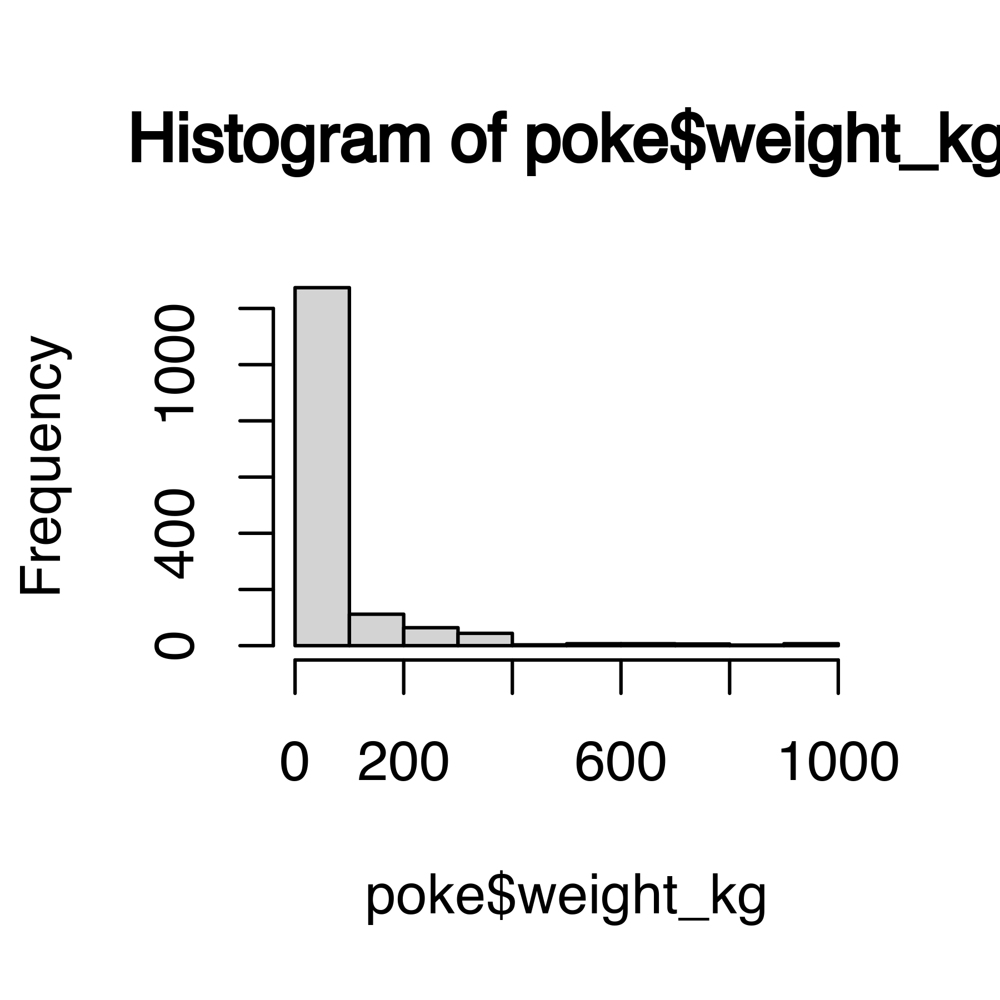
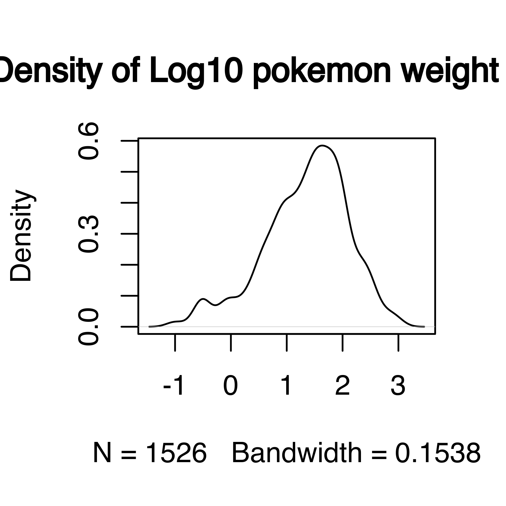
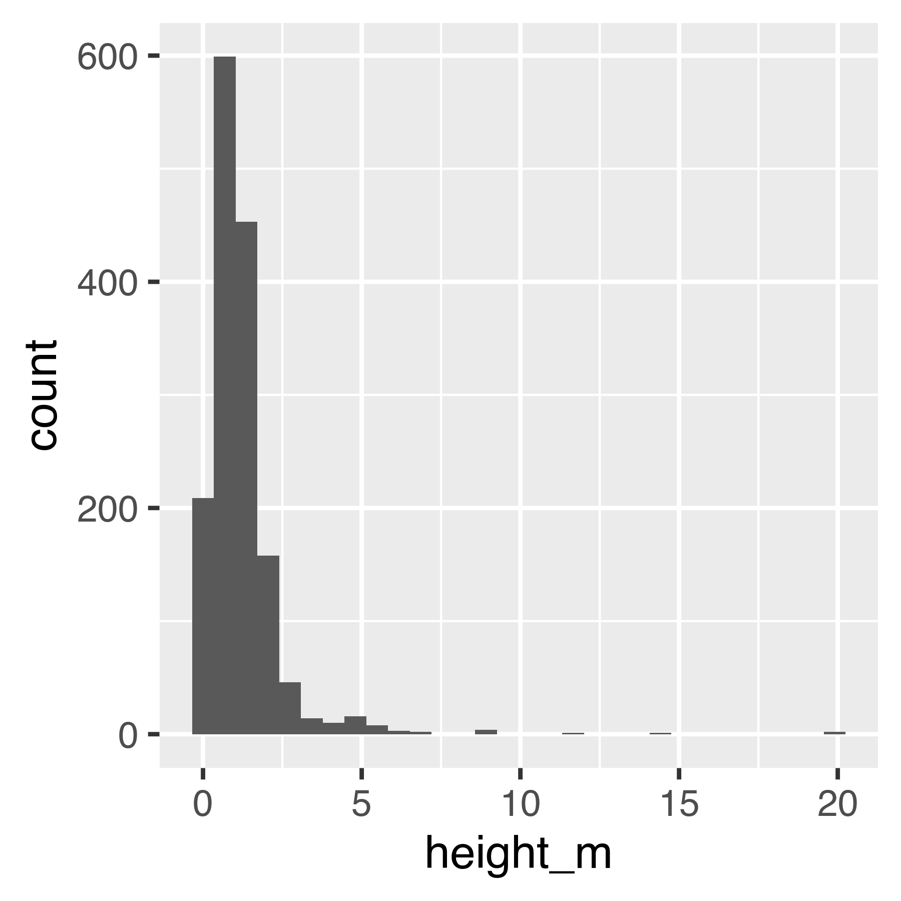
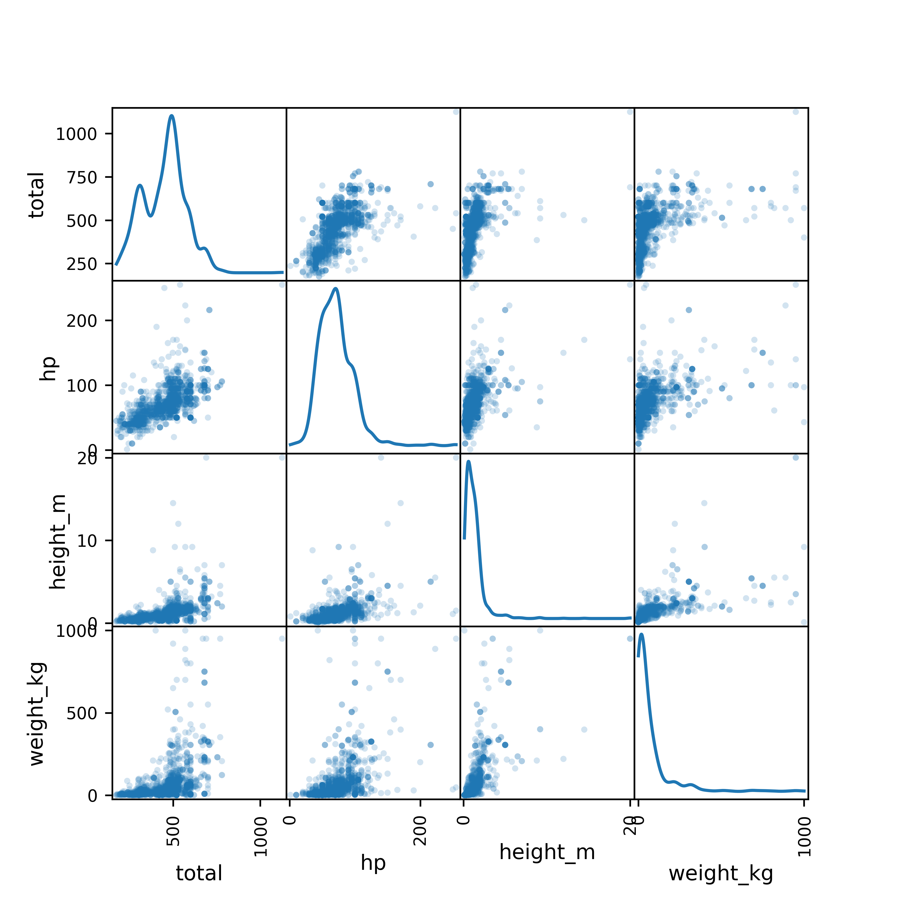

16 Exploratory Data Analysis
16.1 Objectives
- Understand the main goals of exploratory data analysis
- Generate and answer questions about a new dataset using charts, tables, and numerical summaries

Major components of Exploratory Data Analysis (EDA):
- generating questions about your data
- look for answers to the questions (visualization, transformation, modeling)
- use answers to refine the questions and generate new questions
EDA is an iterative process. It is like brainstorming - you start with an idea or question you might have about the data, investigate, and then generate new ideas. EDA is useful even when you are relatively familiar with the type of data you’re working with: in any dataset, it is good to make sure that you know the quality of the data as well as the relationships between the variables in the dataset.
EDA is important because it helps us to know what challenges a particular data set might bring, what we might do with it. Real data is often messy, with large amounts of cleaning that must be done before statistical analysis can commence.
While in many classes you’ll be given mostly clean data, you do need to know how to clean your own data up so that you can use more interesting data sets for projects (and for fun!). EDA is an important component to learning how to work with messy data.
In this section, I will mostly be using the plot commands that come with base R/python and require no extra packages. The R for Data Science book [1] shows plot commands which use the ggplot2 library. I’ll show you some plots from ggplot here as well, but you don’t have to understand how to generate them yet. We will learn more about ggplot2 later, though if you want to start using it now, you may.
16.2 A Note on Language Philosophies
It is usually relatively easy to get summary statistics from a dataset, but the “flow” of EDA is somewhat different depending on the language patterns.
You must realize that R is written by experts in statistics and statistical computing who, despite popular opinion, do not believe that everything in SAS and SPSS is worth copying. Some things done in such packages, which trace their roots back to the days of punched cards and magnetic tape when fitting a single linear model may take several days because your first 5 attempts failed due to syntax errors in the JCL or the SAS code, still reflect the approach of “give me every possible statistic that could be calculated from this model, whether or not it makes sense”. The approach taken in R is different. The underlying assumption is that the useR is thinking about the analysis while doing it. – Douglas Bates
I provide this as a historical artifact, but it does explain the difference between the approach to EDA and model output in R and Python, and the approach in SAS, which you may see in your other statistics classes. This is not (at least, in my opinion) a criticism – the SAS philosophy dates back to the mainframe and punch card days, and the syntax and output still bear evidence of that – but it is worth noting.
In R and in Python, you will have to specify each piece of output you want, but in SAS you will get more than you ever wanted with a single command. Neither approach is wrong, but sometimes one is preferable over the other for a given problem.
16.3 Generating EDA Questions
I very much like the two quotes in the [1] section on EDA Questions:
There are no routine statistical questions, only questionable statistical routines. — Sir David Cox
Far better an approximate answer to the right question, which is often vague, than an exact answer to the wrong question, which can always be made precise. — John Tukey
As statisticians, we are concerned with variability by default. This is also true during EDA: we are interested in variability (or sometimes, lack thereof) in the variables in our dataset, including the co-variability between multiple variables.
We may assess variability using pictures or numerical summaries:
- histograms or density plots (continuous variables)
- column plots (categorical variables)
- boxplots
- 5 number summaries (min, 25%, mean, 75%, max)
- tabular data summaries (for categorical variables)
In many cases, this gives us a picture of both variability and the “typical” value of our variable.
Sometimes we may also be interested in identifying unusual values: outliers, data entry errors, and other points which don’t conform to our expectations. These unusual values may show up when we generate pictures and the axis limits are much larger than expected.
We also are usually concerned with missing values - in many cases, not all observations are complete, and this missingness can interfere with statistical analyses. It can be helpful to keep track of how much missingness there is in any particular variable and any patterns of missingness that would impact the eventual data analysis1.
If you are having trouble getting started on EDA, [3] provides a nice checklist to get you thinking:
- What question(s) are you trying to solve (or prove wrong)?
- What kind of data do you have and how do you treat different types?
- What’s missing from the data and how do you deal with it?
- Where are the outliers and why should you care about them?
- How can you add, change or remove features to get more out of your data?
16.4 Useful EDA Techniques

Suppose we want to explore Pokemon. There’s not just the original 150 (gotta catch ’em all!) - now there are over 1000! Let’s start out by looking at the proportion of Pokemon added in each of the 9 generations.
import pandas as pd
poke = pd.read_csv("https://raw.githubusercontent.com/srvanderplas/datasets/main/clean/pokemon_gen_1-9.csv")
poke['generation'] = pd.Categorical(poke.gen)This data has several categorical and continuous variables that should allow for a reasonable demonstration of a number of techniques for exploring data.
16.4.1 Numerical Summary Statistics
The first, and most basic EDA command in R is summary().
For numeric variables, summary provides 5-number summaries plus the mean. For categorical variables, summary provides the length of the variable and the Class and Mode. For factors, summary provides a table of the most common values, as well as a catch-all “other” category.
# Make types into factors to demonstrate the difference
poke <- tidyr::separate(poke, type, into = c("type_1", "type_2"), sep = ",")
poke$type_1 <- factor(poke$type_1)
poke$type_2 <- factor(poke$type_2)
summary(poke)
## gen pokedex_no img_link name
## Min. :1.000 Min. : 1.0 Length:1526 Length:1526
## 1st Qu.:2.000 1st Qu.: 226.2 Class :character Class :character
## Median :4.000 Median : 484.0 Mode :character Mode :character
## Mean :4.478 Mean : 487.9
## 3rd Qu.:7.000 3rd Qu.: 726.8
## Max. :9.000 Max. :1008.0
##
## variant type_1 type_2 total
## Length:1526 Water :179 Flying :157 Min. : 175.0
## Class :character Normal :156 Psychic: 61 1st Qu.: 345.8
## Mode :character Psychic :123 Ghost : 57 Median : 475.0
## Electric:119 Ground : 57 Mean : 450.3
## Grass :113 Steel : 55 3rd Qu.: 525.0
## Bug :107 (Other):466 Max. :1125.0
## (Other) :729 NA's :673
## hp attack defense sp_attack
## Min. : 1.00 Min. : 5.00 Min. : 5.00 Min. : 10.00
## 1st Qu.: 50.25 1st Qu.: 60.00 1st Qu.: 55.00 1st Qu.: 50.00
## Median : 70.00 Median : 80.00 Median : 70.00 Median : 70.00
## Mean : 71.18 Mean : 82.05 Mean : 75.66 Mean : 75.05
## 3rd Qu.: 85.00 3rd Qu.:100.00 3rd Qu.: 95.00 3rd Qu.: 98.00
## Max. :255.00 Max. :190.00 Max. :250.00 Max. :194.00
##
## sp_defense speed species height_m
## Min. : 20.00 Min. : 5.0 Length:1526 Min. : 0.100
## 1st Qu.: 55.00 1st Qu.: 50.0 Class :character 1st Qu.: 0.500
## Median : 70.00 Median : 70.0 Mode :character Median : 1.000
## Mean : 73.84 Mean : 72.5 Mean : 1.233
## 3rd Qu.: 90.00 3rd Qu.: 95.0 3rd Qu.: 1.500
## Max. :250.00 Max. :200.0 Max. :20.000
##
## weight_kg generation
## Min. : 0.10 1 :285
## 1st Qu.: 8.00 5 :237
## Median : 29.25 3 :193
## Mean : 68.25 4 :178
## 3rd Qu.: 78.50 8 :134
## Max. :999.90 7 :133
## (Other):366One common question in EDA is whether there are missing values or other inconsistencies that need to be handled. summary() provides you with the NA count for each variable, making it easy to identify what variables are likely to cause problems in an analysis. We can see in this summary that 673 pokemon don’t have a second type.
We also look for extreme values. There is at least one pokemon who appears to have a weight of 999.90 kg. Let’s investigate further:
poke[poke$weight_kg > 999,]
## # A tibble: 2 × 18
## gen pokedex…¹ img_l…² name variant type_1 type_2 total hp attack defense
## <dbl> <dbl> <chr> <chr> <chr> <fct> <fct> <dbl> <dbl> <dbl> <dbl>
## 1 7 790 https:… Cosm… NA Psych… <NA> 400 43 29 131
## 2 7 797 https:… Cele… NA Steel Flying 570 97 101 103
## # … with 7 more variables: sp_attack <dbl>, sp_defense <dbl>, speed <dbl>,
## # species <chr>, height_m <dbl>, weight_kg <dbl>, generation <fct>, and
## # abbreviated variable names ¹pokedex_no, ²img_link
# Show any rows where weight_kg is extremeThis is the last row of our data frame, and this pokemon appears to have many missing values.
The most basic EDA command in pandas is df.describe() (which operates on a DataFrame named df). Like summary() in R, describe() provides a 5-number summary for numeric variables. For categorical variables, describe() provides the number of unique values, the most common value, and the frequency of that common value.
# Split types into two columns
poke[['type_1', 'type_2']] = poke.type.str.split(",", expand = True)
# Make each one categorical
poke['type_1'] = pd.Categorical(poke.type_1)
poke['type_2'] = pd.Categorical(poke.type_2)
poke.iloc[:,:].describe() # describe only shows numeric variables by default
# You can get categorical variables too if that's all you give it to show
## gen pokedex_no ... height_m weight_kg
## count 1526.000000 1526.000000 ... 1526.000000 1526.000000
## mean 4.477720 487.863041 ... 1.232962 68.249607
## std 2.565182 290.328644 ... 1.289446 121.828015
## min 1.000000 1.000000 ... 0.100000 0.100000
## 25% 2.000000 226.250000 ... 0.500000 8.000000
## 50% 4.000000 484.000000 ... 1.000000 29.250000
## 75% 7.000000 726.750000 ... 1.500000 78.500000
## max 9.000000 1008.000000 ... 20.000000 999.900000
##
## [8 rows x 11 columns]
poke['type_1'].describe()
## count 1526
## unique 18
## top Water
## freq 179
## Name: type_1, dtype: object
poke['type_2'].describe()
## count 853
## unique 18
## top Flying
## freq 157
## Name: type_2, dtype: objectAn R package that is incredibly useful for this type of dataset exploration is skimr.
| Name | poke |
| Number of rows | 1526 |
| Number of columns | 18 |
| _______________________ | |
| Column type frequency: | |
| character | 4 |
| factor | 3 |
| numeric | 11 |
| ________________________ | |
| Group variables | None |
Variable type: character
| skim_variable | n_missing | complete_rate | min | max | empty | n_unique | whitespace |
|---|---|---|---|---|---|---|---|
| img_link | 0 | 1 | 59 | 84 | 0 | 1192 | 0 |
| name | 0 | 1 | 3 | 12 | 0 | 1008 | 0 |
| variant | 0 | 1 | 2 | 22 | 0 | 105 | 0 |
| species | 0 | 1 | 11 | 21 | 0 | 708 | 0 |
Variable type: factor
| skim_variable | n_missing | complete_rate | ordered | n_unique | top_counts |
|---|---|---|---|---|---|
| type_1 | 0 | 1.00 | FALSE | 18 | Wat: 179, Nor: 156, Psy: 123, Ele: 119 |
| type_2 | 673 | 0.56 | FALSE | 18 | Fly: 157, Psy: 61, Gho: 57, Gro: 57 |
| generation | 0 | 1.00 | FALSE | 9 | 1: 285, 5: 237, 3: 193, 4: 178 |
Variable type: numeric
| skim_variable | n_missing | complete_rate | mean | sd | p0 | p25 | p50 | p75 | p100 | hist |
|---|---|---|---|---|---|---|---|---|---|---|
| gen | 0 | 1 | 4.48 | 2.57 | 1.0 | 2.00 | 4.00 | 7.00 | 9.0 | ▇▇▅▅▅ |
| pokedex_no | 0 | 1 | 487.86 | 290.33 | 1.0 | 226.25 | 484.00 | 726.75 | 1008.0 | ▇▆▇▇▆ |
| total | 0 | 1 | 450.29 | 120.59 | 175.0 | 345.75 | 475.00 | 525.00 | 1125.0 | ▅▇▂▁▁ |
| hp | 0 | 1 | 71.18 | 26.53 | 1.0 | 50.25 | 70.00 | 85.00 | 255.0 | ▃▇▁▁▁ |
| attack | 0 | 1 | 82.05 | 32.41 | 5.0 | 60.00 | 80.00 | 100.00 | 190.0 | ▂▇▇▂▁ |
| defense | 0 | 1 | 75.66 | 30.21 | 5.0 | 55.00 | 70.00 | 95.00 | 250.0 | ▃▇▂▁▁ |
| sp_attack | 0 | 1 | 75.05 | 33.88 | 10.0 | 50.00 | 70.00 | 98.00 | 194.0 | ▅▇▅▂▁ |
| sp_defense | 0 | 1 | 73.84 | 27.72 | 20.0 | 55.00 | 70.00 | 90.00 | 250.0 | ▇▇▁▁▁ |
| speed | 0 | 1 | 72.50 | 30.74 | 5.0 | 50.00 | 70.00 | 95.00 | 200.0 | ▃▇▆▁▁ |
| height_m | 0 | 1 | 1.23 | 1.29 | 0.1 | 0.50 | 1.00 | 1.50 | 20.0 | ▇▁▁▁▁ |
| weight_kg | 0 | 1 | 68.25 | 121.83 | 0.1 | 8.00 | 29.25 | 78.50 | 999.9 | ▇▁▁▁▁ |
skim provides a beautiful table of summary statistics along with a sparklines-style histogram of values, giving you a sneak peek at the distribution.
There is a similar package to skimr in R called skimpy in Python.
from skimpy import skim
skim(poke)
## ╭─────────────────────────────── skimpy summary ───────────────────────────────╮
## │ Data Summary Data Types │
## │ ┏━━━━━━━━━━━━━━━━━━━┳━━━━━━━━┓ ┏━━━━━━━━━━━━━┳━━━━━━━┓ │
## │ ┃ dataframe ┃ Values ┃ ┃ Column Type ┃ Count ┃ │
## │ ┡━━━━━━━━━━━━━━━━━━━╇━━━━━━━━┩ ┡━━━━━━━━━━━━━╇━━━━━━━┩ │
## │ │ Number of rows │ 1526 │ │ int64 │ 9 │ │
## │ │ Number of columns │ 19 │ │ string │ 5 │ │
## │ └───────────────────┴────────┘ │ category │ 3 │ │
## │ │ float64 │ 2 │ │
## │ └─────────────┴───────┘ │
## │ Categories │
## │ ┏━━━━━━━━━━━━━━━━━━━━━━━┓ │
## │ ┃ Categorical Variables ┃ │
## │ ┡━━━━━━━━━━━━━━━━━━━━━━━┩ │
## │ │ generation │ │
## │ │ type_1 │ │
## │ │ type_2 │ │
## │ └───────────────────────┘ │
## │ number │
## │ ┏━━━━━━━━━━━━━━┳━━━━┳━━━━━━┳━━━━━━┳━━━━━┳━━━━━┳━━━━━┳━━━━━┳━━━━━━┳━━━━━━━━┓ │
## │ ┃ column_name ┃ NA ┃ NA % ┃ mean ┃ sd ┃ p0 ┃ p25 ┃ p75 ┃ p100 ┃ hist ┃ │
## │ ┡━━━━━━━━━━━━━━╇━━━━╇━━━━━━╇━━━━━━╇━━━━━╇━━━━━╇━━━━━╇━━━━━╇━━━━━━╇━━━━━━━━┩ │
## │ │ gen │ 0 │ 0 │ 4.5 │ 2.6 │ 1 │ 2 │ 7 │ 9 │ █▄▃▇▃▅ │ │
## │ │ pokedex_no │ 0 │ 0 │ 490 │ 290 │ 1 │ 230 │ 730 │ 1000 │ █▅▇▇▆▆ │ │
## │ │ total │ 0 │ 0 │ 450 │ 120 │ 180 │ 350 │ 520 │ 1100 │ ▅█▇▁ │ │
## │ │ hp │ 0 │ 0 │ 71 │ 27 │ 1 │ 50 │ 85 │ 260 │ ▁█▃ │ │
## │ │ attack │ 0 │ 0 │ 82 │ 32 │ 5 │ 60 │ 100 │ 190 │ ▂▇█▆▂▁ │ │
## │ │ defense │ 0 │ 0 │ 76 │ 30 │ 5 │ 55 │ 95 │ 250 │ ▂█▄▁ │ │
## │ │ sp_attack │ 0 │ 0 │ 75 │ 34 │ 10 │ 50 │ 98 │ 190 │ ▄█▆▃▁ │ │
## │ │ sp_defense │ 0 │ 0 │ 74 │ 28 │ 20 │ 55 │ 90 │ 250 │ ▅█▃ │ │
## │ │ speed │ 0 │ 0 │ 73 │ 31 │ 5 │ 50 │ 95 │ 200 │ ▃▆█▂▁ │ │
## │ │ height_m │ 0 │ 0 │ 1.2 │ 1.3 │ 0.1 │ 0.5 │ 1.5 │ 20 │ █ │ │
## │ │ weight_kg │ 0 │ 0 │ 68 │ 120 │ 0.1 │ 8 │ 78 │ 1000 │ █▁ │ │
## │ └──────────────┴────┴──────┴──────┴─────┴─────┴─────┴─────┴──────┴────────┘ │
## │ category │
## │ ┏━━━━━━━━━━━━━━━━━━━━━━┳━━━━━━━━━┳━━━━━━━━━━┳━━━━━━━━━━━━━━━┳━━━━━━━━━━━━━┓ │
## │ ┃ column_name ┃ NA ┃ NA % ┃ ordered ┃ unique ┃ │
## │ ┡━━━━━━━━━━━━━━━━━━━━━━╇━━━━━━━━━╇━━━━━━━━━━╇━━━━━━━━━━━━━━━╇━━━━━━━━━━━━━┩ │
## │ │ generation │ 0 │ 0 │ False │ 9 │ │
## │ │ type_1 │ 0 │ 0 │ False │ 18 │ │
## │ │ type_2 │ 670 │ 44 │ False │ 19 │ │
## │ └──────────────────────┴─────────┴──────────┴───────────────┴─────────────┘ │
## │ string │
## │ ┏━━━━━━━━━━━━━━━━━┳━━━━━━━━┳━━━━━━━━┳━━━━━━━━━━━━━━━━━━━━┳━━━━━━━━━━━━━━━━┓ │
## │ ┃ column_name ┃ NA ┃ NA % ┃ words per row ┃ total words ┃ │
## │ ┡━━━━━━━━━━━━━━━━━╇━━━━━━━━╇━━━━━━━━╇━━━━━━━━━━━━━━━━━━━━╇━━━━━━━━━━━━━━━━┩ │
## │ │ img_link │ 0 │ 0 │ 1 │ 1500 │ │
## │ │ name │ 0 │ 0 │ 1 │ 1500 │ │
## │ │ variant │ 1100 │ 70 │ 1 │ 1500 │ │
## │ │ type │ 0 │ 0 │ 1 │ 1500 │ │
## │ │ species │ 0 │ 0 │ 1 │ 1500 │ │
## │ └─────────────────┴────────┴────────┴────────────────────┴────────────────┘ │
## ╰──────────────────────────────────── End ─────────────────────────────────────╯16.4.2 Assessing Distributions
We are often also interested in the distribution of values.
16.4.2.1 Categorical Variables
One useful way to assess the distribution of values is to generate a cross-tabular view of the data. This is mostly important for variables with a relatively low number of categories - otherwise, it is usually easier to use a graphical summary method.
Tabular Summaries
We can generate cross-tabs for variables that we know are discrete (such as generation, which will always be a whole number). We can even generate cross-tabular views for a combination of two variables (or theoretically more, but this gets hard to read and track).
table(poke$generation)
##
## 1 2 3 4 5 6 7 8 9
## 285 124 193 178 237 119 133 134 123
table(poke$type_1, poke$type_2)
##
## Bug Dark Dragon Electric Fairy Fighting Fire Flying Ghost Grass
## Bug 0 1 0 4 2 5 2 14 1 8
## Dark 0 0 4 0 3 2 4 8 2 2
## Dragon 0 1 0 1 1 2 1 6 3 0
## Electric 0 4 3 0 2 2 6 19 6 10
## Fairy 0 0 0 0 0 1 0 6 0 0
## Fighting 0 3 1 1 0 0 4 3 2 0
## Fire 2 1 2 0 0 7 0 11 7 0
## Flying 0 1 2 0 0 1 0 0 0 0
## Ghost 0 1 4 0 3 0 3 6 0 11
## Grass 0 5 6 0 5 7 1 8 4 0
## Ground 0 3 2 2 0 1 1 6 5 2
## Ice 2 0 0 0 2 0 4 3 1 0
## Normal 0 0 1 0 5 5 0 33 4 8
## Poison 1 7 4 0 2 3 2 3 0 0
## Psychic 0 2 3 0 11 3 1 14 9 4
## Rock 2 2 2 7 3 1 2 8 0 2
## Steel 0 0 9 0 4 1 0 2 7 0
## Water 2 9 6 2 4 6 0 7 6 3
##
## Ground Ice Normal Poison Psychic Rock Steel Water
## Bug 4 0 0 12 3 4 13 3
## Dark 1 4 9 3 2 0 3 0
## Dragon 13 12 1 0 4 0 0 9
## Electric 1 7 2 5 2 0 4 6
## Fairy 0 0 0 0 1 0 5 0
## Fighting 0 1 0 2 3 0 4 6
## Fire 3 0 2 1 6 5 1 1
## Flying 0 0 0 0 0 0 1 3
## Ghost 2 0 0 4 0 0 0 0
## Grass 1 3 3 15 3 0 3 0
## Ground 0 0 1 0 2 3 8 0
## Ice 3 0 0 0 5 2 4 4
## Normal 1 0 0 0 6 0 0 1
## Poison 5 0 2 0 4 0 0 3
## Psychic 0 3 4 0 0 0 4 0
## Rock 9 2 0 3 2 0 4 6
## Steel 2 0 0 2 7 3 0 0
## Water 12 4 0 4 11 6 1 0import numpy as np
# For only one factor, use .groupby('colname')['colname'].count()
poke.groupby(['generation'])['generation'].count()
# for two or more factors, use pd.crosstab
## generation
## 1 285
## 2 124
## 3 193
## 4 178
## 5 237
## 6 119
## 7 133
## 8 134
## 9 123
## Name: generation, dtype: int64
pd.crosstab(index = poke['type_1'], columns = poke['type_2'])
## type_2 Bug Dark Dragon Electric ... Psychic Rock Steel Water
## type_1 ...
## Bug 0 1 0 4 ... 3 4 13 3
## Dark 0 0 4 0 ... 2 0 3 0
## Dragon 0 1 0 1 ... 4 0 0 9
## Electric 0 4 3 0 ... 2 0 4 6
## Fairy 0 0 0 0 ... 1 0 5 0
## Fighting 0 3 1 1 ... 3 0 4 6
## Fire 2 1 2 0 ... 6 5 1 1
## Flying 0 1 2 0 ... 0 0 1 3
## Ghost 0 1 4 0 ... 0 0 0 0
## Grass 0 5 6 0 ... 3 0 3 0
## Ground 0 3 2 2 ... 2 3 8 0
## Ice 2 0 0 0 ... 5 2 4 4
## Normal 0 0 1 0 ... 6 0 0 1
## Poison 1 7 4 0 ... 4 0 0 3
## Psychic 0 2 3 0 ... 0 0 4 0
## Rock 2 2 2 7 ... 2 0 4 6
## Steel 0 0 9 0 ... 7 3 0 0
## Water 2 9 6 2 ... 11 6 1 0
##
## [18 rows x 18 columns]Frequency Plots
We generate a bar chart using geom_bar. It helps to tell R that generation (despite appearances) is categorical by declaring it a factor variable. This ensures that we get a break on the x-axis at each generation.
We generate a bar chart using the contingency table we generated earlier combined with matplotlib’s plt.bar().
import matplotlib.pyplot as plt
tab = poke.groupby(['generation'])['generation'].count()
plt.bar(tab.keys(), tab.values, color = 'grey')
## <BarContainer object of 9 artists>
plt.xlabel("Generation")
plt.ylabel("# Pokemon")
plt.show()Plotnine is a ggplot2 clone for python, and for the most part, the code looks almost exactly the same, minus a few python-specific tweaks to account for different syntax conventions in each language.
We generate a bar chart using geom_bar. It helps to tell R that generation (despite appearances) is categorical by declaring it a factor variable. This ensures that we get a break on the x-axis at each generation.
from plotnine import *
(ggplot(mapping = aes(x = "factor(generation)"), data = poke) +
geom_bar() +
xlab("Generation") + ylab("# Pokemon"))
## <ggplot: (8779212617725)>
16.4.2.2 Quantitative Variables
We covered some numerical summary statistics in the numerical summary statistic section above. In this section, we will primarily focus on visualization methods for assessing the distribution of quantitative variables.
The code in this section uses the R pipe, %>%. The left side of the pipe is passed as an argument to the right side. This makes code easier to read because it becomes a step-wise “recipe” instead of a nested mess of functions and parentheses.

We can generate histograms2 or kernel density plots (a continuous version of the histogram) to show us the distribution of a continuous variable.
By default, R uses ranges of \((a, b]\) in histograms, so we specify which breaks will give us a desirable result. If we do not specify breaks, R will pick them for us.
hist(poke$hp)
For continuous variables, we can use histograms, or we can examine kernel density plots.
library(magrittr) # This provides the pipe command, %>%
hist(poke$weight_kg)
poke$weight_kg %>%
log10() %>% # Take the log - will transformation be useful w/ modeling?
hist(main = "Histogram of Log10 Weight (Kg)") # create a histogram
poke$weight_kg %>%
density(na.rm = T) %>% # First, we compute the kernel density
# (na.rm = T says to ignore NA values)
plot(main = "Density of Weight (Kg)") # Then, we plot the result
poke$weight_kg %>%
log10() %>% # Transform the variable
density(na.rm = T) %>% # Compute the density ignoring missing values
plot(main = "Density of Log10 pokemon weight in Kg") # Plot the result,
# changing the title of the plot to a meaningful value


Histogram and density plots of weight and log10 weight of different pokemon. The untransformed data are highly skewed, the transformed data are significantly less skewed.
import matplotlib.pyplot as plt
# Create a 2x2 grid of plots with separate axes
# This uses python multi-assignment to assign figures, axes
# variables all in one go
fig, ((ax1, ax2), (ax3, ax4)) = plt.subplots(2, 2)
poke.weight_kg.plot.hist(ax = ax1) # first plot
ax1.set_title("Histogram of Weight (kg)")
np.log10(poke.weight_kg).plot.hist(ax = ax2)
ax2.set_title("Histogram of Log10 Weight (kg)")
poke.weight_kg.plot.density(ax = ax3)
ax3.set_title("Density of Weight (kg)")
np.log10(poke.weight_kg).plot.density(ax = ax4)
ax4.set_title("Density of Log10 Weight (kg)")
plt.tight_layout()
plt.show()
library(ggplot2)
ggplot(poke, aes(x = height_m)) +
geom_histogram(bins = 30)
ggplot(poke, aes(x = height_m)) +
geom_histogram(bins = 30) +
scale_x_log10()
ggplot(poke, aes(x = height_m)) +
geom_density()
ggplot(poke, aes(x = height_m)) +
geom_density() +
scale_x_log10()


Histogram and density plots of height and log10 height of different pokemon. The untransformed data are highly skewed, the transformed data are significantly less skewed.
Notice that in ggplot2/plotnine, we transform the axes instead of the data. This means that the units on the axis are true to the original, unlike in base R and matplotlib.
ggplot(poke, aes(x = 'height_m')) + geom_histogram(bins = 30)
## <ggplot: (8779212572249)>
(ggplot(poke, aes(x = 'height_m')) +
geom_histogram(bins = 30) +
scale_x_log10())
## <ggplot: (8779209653879)>
(ggplot(poke, aes(x = 'height_m')) +
geom_density())
## <ggplot: (8779209690695)>
(ggplot(poke, aes(x = 'height_m')) +
geom_density() +
scale_x_log10())
## <ggplot: (8779215468686)>


Histogram and density plots of height and log10 height of different pokemon. The untransformed data are highly skewed, the transformed data are significantly less skewed.
Notice that in ggplot2/plotnine, we transform the axes instead of the data. This means that the units on the axis are true to the original, unlike in base R and matplotlib.
16.4.3 Relationships Between Variables
16.4.3.1 Categorical - Categorical Relationships
We can generate a (simple) mosaic plot (the equivalent of a 2-dimensional cross-tabular view) using geom_bar with position = 'fill', which scales each bar so that it ends at 1. I’ve flipped the axes using coord_flip so that you can read the labels more easily.
library(ggplot2)
ggplot(poke, aes(x = factor(type_1), fill = factor(type_2))) +
geom_bar(color = "black", position = "fill") +
xlab("Type 1") + ylab("Proportion of Pokemon w/ Type 2") +
coord_flip()
Another way to look at this data is to bin it in x and y and shade the resulting bins by the number of data points in each bin. We can even add in labels so that this is at least as clear as the tabular view!
ggplot(poke, aes(x = factor(type_1), y = factor(type_2))) +
# Shade tiles according to the number of things in the bin
geom_tile(aes(fill = after_stat(count)), stat = "bin2d") +
# Add the number of things in the bin to the top of the tile as text
geom_text(aes(label = after_stat(count)), stat = 'bin2d') +
# Scale the tile fill
scale_fill_gradient2(limits = c(0, 100), low = "white", high = "blue", na.value = "white") +
theme(axis.text.x = element_text(angle = 90, hjust = 1, vjust = 0.5))Base R mosaic plots aren’t nearly as pretty as the ggplot version, but I will at least show you how to create them.
To get a mosaicplot, we need an additional library, called statsmodels, which we install with pip install statsmodels in the terminal.
import matplotlib.pyplot as plt
from statsmodels.graphics.mosaicplot import mosaic
mosaic(poke, ['type_1', 'type_2'], title = "Pokemon Types")
## (<Figure size 700x500 with 3 Axes>, {('Grass', 'Poison'): (0.0, 0.0, 0.06915143624291603, 0.22180599369085174), ('Grass', 'Flying'): (0.0, 0.22496056782334384, 0.06915143624291603, 0.11829652996845426), ('Grass', 'Dragon'): (0.0, 0.34641167192429023, 0.06915143624291603, 0.0887223974763407), ('Grass', 'Normal'): (0.0, 0.438288643533123, 0.06915143624291603, 0.04436119873817035), ('Grass', 'Psychic'): (0.0, 0.48580441640378547, 0.06915143624291603, 0.04436119873817035), ('Grass', 'Steel'): (0.0, 0.533320189274448, 0.06915143624291603, 0.04436119873817035), ('Grass', 'Ground'): (0.0, 0.5808359621451105, 0.06915143624291603, 0.014787066246056782), ('Grass', 'Fairy'): (0.0, 0.5987776025236593, 0.06915143624291603, 0.07393533123028391), ('Grass', 'Grass'): (0.0, 0.6758675078864353, 0.06915143624291603, 0.0), ('Grass', 'Rock'): (0.0, 0.6790220820189274, 0.06915143624291603, 0.0), ('Grass', 'Fighting'): (0.0, 0.6821766561514195, 0.06915143624291603, 0.10350946372239749), ('Grass', 'Electric'): (0.0, 0.7888406940063091, 0.06915143624291603, 0.0), ('Grass', 'Ice'): (0.0, 0.7919952681388013, 0.06915143624291603, 0.04436119873817035), ('Grass', 'Dark'): (0.0, 0.8395110410094637, 0.06915143624291603, 0.07393533123028391), ('Grass', 'Ghost'): (0.0, 0.9166009463722398, 0.06915143624291603, 0.05914826498422713), ('Grass', 'Fire'): (0.0, 0.9789037854889591, 0.06915143624291603, 0.014787066246056782), ('Grass', 'Water'): (0.0, 0.9968454258675078, 0.06915143624291603, 0.0), ('Grass', 'Bug'): (0.0, 1.0, 0.06915143624291603, 0.0), ('Fire', 'Poison'): (0.0737597311737916, 0.0, 0.05294406837348259, 0.019313719178523144), ('Fire', 'Flying'): (0.0737597311737916, 0.02246829331101526, 0.05294406837348259, 0.2124509109637546), ('Fire', 'Dragon'): (0.0737597311737916, 0.23807377840726196, 0.05294406837348259, 0.03862743835704628), ('Fire', 'Normal'): (0.0737597311737916, 0.27985579089680035, 0.05294406837348259, 0.03862743835704628), ('Fire', 'Psychic'): (0.0737597311737916, 0.32163780338633874, 0.05294406837348259, 0.11588231507113889), ('Fire', 'Steel'): (0.0737597311737916, 0.4406746925899698, 0.05294406837348259, 0.019313719178523165), ('Fire', 'Ground'): (0.0737597311737916, 0.46314298590098507, 0.05294406837348259, 0.05794115753556944), ('Fire', 'Fairy'): (0.0737597311737916, 0.5242387175690466, 0.05294406837348259, 0.0), ('Fire', 'Grass'): (0.0737597311737916, 0.5273932917015387, 0.05294406837348259, 0.0), ('Fire', 'Rock'): (0.0737597311737916, 0.5305478658340308, 0.05294406837348259, 0.09656859589261572), ('Fire', 'Fighting'): (0.0737597311737916, 0.6302710358591387, 0.05294406837348259, 0.13519603424966195), ('Fire', 'Electric'): (0.0737597311737916, 0.7686216442412926, 0.05294406837348259, 0.0), ('Fire', 'Ice'): (0.0737597311737916, 0.7717762183737849, 0.05294406837348259, 0.0), ('Fire', 'Dark'): (0.0737597311737916, 0.7749307925062769, 0.05294406837348259, 0.019313719178523165), ('Fire', 'Ghost'): (0.0737597311737916, 0.7973990858172922, 0.05294406837348259, 0.13519603424966206), ('Fire', 'Fire'): (0.0737597311737916, 0.9357496941994464, 0.05294406837348259, 0.0), ('Fire', 'Water'): (0.0737597311737916, 0.9389042683319385, 0.05294406837348259, 0.01931371917852306), ('Fire', 'Bug'): (0.0737597311737916, 0.9613725616429537, 0.05294406837348259, 0.03862743835704633), ('Bug', 'Poison'): (0.1313120944781498, 0.0, 0.08211733053846279, 0.14942719574962643), ('Bug', 'Flying'): (0.1313120944781498, 0.15258176988211852, 0.08211733053846279, 0.1743317283745642), ('Bug', 'Dragon'): (0.1313120944781498, 0.33006807238917485, 0.08211733053846279, 0.0), ('Bug', 'Normal'): (0.1313120944781498, 0.33322264652166694, 0.08211733053846279, 0.0), ('Bug', 'Psychic'): (0.1313120944781498, 0.33637722065415904, 0.08211733053846279, 0.03735679893740662), ('Bug', 'Steel'): (0.1313120944781498, 0.3768885937240578, 0.08211733053846279, 0.16187946206209533), ('Bug', 'Ground'): (0.1313120944781498, 0.5419226299186453, 0.08211733053846279, 0.049809065249875425), ('Bug', 'Fairy'): (0.1313120944781498, 0.5948862693010127, 0.08211733053846279, 0.024904532624937713), ('Bug', 'Grass'): (0.1313120944781498, 0.6229453760584426, 0.08211733053846279, 0.09961813049975095), ('Bug', 'Rock'): (0.1313120944781498, 0.7257180806906857, 0.08211733053846279, 0.04980906524987553), ('Bug', 'Fighting'): (0.1313120944781498, 0.7786817200730534, 0.08211733053846279, 0.062261331562344334), ('Bug', 'Electric'): (0.1313120944781498, 0.8440976257678897, 0.08211733053846279, 0.04980906524987553), ('Bug', 'Ice'): (0.1313120944781498, 0.8970612651502574, 0.08211733053846279, 0.0), ('Bug', 'Dark'): (0.1313120944781498, 0.9002158392827495, 0.08211733053846279, 0.012452266312468803), ('Bug', 'Ghost'): (0.1313120944781498, 0.9158226797277104, 0.08211733053846279, 0.012452266312468908), ('Bug', 'Fire'): (0.1313120944781498, 0.9314295201726716, 0.08211733053846279, 0.024904532624937713), ('Bug', 'Water'): (0.1313120944781498, 0.9594886269301012, 0.08211733053846279, 0.03735679893740662), ('Bug', 'Bug'): (0.1313120944781498, 1.0, 0.08211733053846279, 0.0), ('Normal', 'Poison'): (0.21803771994748813, 0.0, 0.06915143624291603, 0.0), ('Normal', 'Flying'): (0.21803771994748813, 0.003154574132492114, 0.06915143624291603, 0.48797318611987384), ('Normal', 'Dragon'): (0.21803771994748813, 0.4942823343848581, 0.06915143624291603, 0.014787066246056782), ('Normal', 'Normal'): (0.21803771994748813, 0.512223974763407, 0.06915143624291603, 0.0), ('Normal', 'Psychic'): (0.21803771994748813, 0.5153785488958991, 0.06915143624291603, 0.0887223974763407), ('Normal', 'Steel'): (0.21803771994748813, 0.607255520504732, 0.06915143624291603, 0.0), ('Normal', 'Ground'): (0.21803771994748813, 0.610410094637224, 0.06915143624291603, 0.014787066246056782), ('Normal', 'Fairy'): (0.21803771994748813, 0.6283517350157729, 0.06915143624291603, 0.07393533123028391), ('Normal', 'Grass'): (0.21803771994748813, 0.7054416403785488, 0.06915143624291603, 0.11829652996845426), ('Normal', 'Rock'): (0.21803771994748813, 0.8268927444794953, 0.06915143624291603, 0.0), ('Normal', 'Fighting'): (0.21803771994748813, 0.8300473186119874, 0.06915143624291603, 0.07393533123028391), ('Normal', 'Electric'): (0.21803771994748813, 0.9071372239747634, 0.06915143624291603, 0.0), ('Normal', 'Ice'): (0.21803771994748813, 0.9102917981072556, 0.06915143624291603, 0.0), ('Normal', 'Dark'): (0.21803771994748813, 0.9134463722397477, 0.06915143624291603, 0.0), ('Normal', 'Ghost'): (0.21803771994748813, 0.9166009463722398, 0.06915143624291603, 0.05914826498422713), ('Normal', 'Fire'): (0.21803771994748813, 0.9789037854889591, 0.06915143624291603, 0.0), ('Normal', 'Water'): (0.21803771994748813, 0.982058359621451, 0.06915143624291603, 0.014787066246056782), ('Normal', 'Bug'): (0.21803771994748813, 1.0, 0.06915143624291603, 0.0), ('Dark', 'Poison'): (0.29179745112127975, 0.0, 0.05078308599089144, 0.060406738707295786), ('Dark', 'Flying'): (0.29179745112127975, 0.0635613128397879, 0.05078308599089144, 0.1610846365527888), ('Dark', 'Dragon'): (0.29179745112127975, 0.2278005235250688, 0.05078308599089144, 0.0805423182763944), ('Dark', 'Normal'): (0.29179745112127975, 0.31149741593395536, 0.05078308599089144, 0.18122021612188732), ('Dark', 'Psychic'): (0.29179745112127975, 0.4958722061883347, 0.05078308599089144, 0.04027115913819725), ('Dark', 'Steel'): (0.29179745112127975, 0.5392979394590242, 0.05078308599089144, 0.06040673870729577), ('Dark', 'Ground'): (0.29179745112127975, 0.602859252298812, 0.05078308599089144, 0.020135579569098627), ('Dark', 'Fairy'): (0.29179745112127975, 0.6261494060004027, 0.05078308599089144, 0.06040673870729577), ('Dark', 'Grass'): (0.29179745112127975, 0.6897107188401906, 0.05078308599089144, 0.04027115913819715), ('Dark', 'Rock'): (0.29179745112127975, 0.73313645211088, 0.05078308599089144, 0.0), ('Dark', 'Fighting'): (0.29179745112127975, 0.7362910262433721, 0.05078308599089144, 0.04027115913819725), ('Dark', 'Electric'): (0.29179745112127975, 0.7797167595140614, 0.05078308599089144, 0.0), ('Dark', 'Ice'): (0.29179745112127975, 0.7828713336465536, 0.05078308599089144, 0.0805423182763944), ('Dark', 'Dark'): (0.29179745112127975, 0.86656822605544, 0.05078308599089144, 0.0), ('Dark', 'Ghost'): (0.29179745112127975, 0.8697228001879321, 0.05078308599089144, 0.04027115913819715), ('Dark', 'Fire'): (0.29179745112127975, 0.9131485334586215, 0.05078308599089144, 0.0805423182763944), ('Dark', 'Water'): (0.29179745112127975, 0.9968454258675078, 0.05078308599089144, 0.0), ('Dark', 'Bug'): (0.29179745112127975, 1.0, 0.05078308599089144, 0.0), ('Electric', 'Poison'): (0.3471888320430468, 0.0, 0.08535880411234952, 0.05989697719921735), ('Electric', 'Flying'): (0.3471888320430468, 0.06305155133170946, 0.08535880411234952, 0.22760851335702592), ('Electric', 'Dragon'): (0.3471888320430468, 0.2938146388212275, 0.08535880411234952, 0.03593818631953039), ('Electric', 'Normal'): (0.3471888320430468, 0.33290739927325, 0.08535880411234952, 0.023958790879686963), ('Electric', 'Psychic'): (0.3471888320430468, 0.36002076428542906, 0.08535880411234952, 0.02395879087968691), ('Electric', 'Steel'): (0.3471888320430468, 0.3871341292976081, 0.08535880411234952, 0.04791758175937387), ('Electric', 'Ground'): (0.3471888320430468, 0.43820628518947413, 0.08535880411234952, 0.011979395439843481), ('Electric', 'Fairy'): (0.3471888320430468, 0.45334025476180967, 0.08535880411234952, 0.023958790879686963), ('Electric', 'Grass'): (0.3471888320430468, 0.4804536197739887, 0.08535880411234952, 0.1197939543984347), ('Electric', 'Rock'): (0.3471888320430468, 0.6034021483049156, 0.08535880411234952, 0.0), ('Electric', 'Fighting'): (0.3471888320430468, 0.6065567224374077, 0.08535880411234952, 0.023958790879686963), ('Electric', 'Electric'): (0.3471888320430468, 0.6336700874495867, 0.08535880411234952, 0.0), ('Electric', 'Ice'): (0.3471888320430468, 0.636824661582079, 0.08535880411234952, 0.08385576807890421), ('Electric', 'Dark'): (0.3471888320430468, 0.7238350037934752, 0.08535880411234952, 0.047917581759373926), ('Electric', 'Ghost'): (0.3471888320430468, 0.7749071596853412, 0.08535880411234952, 0.07187637263906078), ('Electric', 'Fire'): (0.3471888320430468, 0.8499381064568942, 0.08535880411234952, 0.07187637263906088), ('Electric', 'Water'): (0.3471888320430468, 0.9249690532284471, 0.08535880411234952, 0.07187637263906078), ('Electric', 'Bug'): (0.3471888320430468, 1.0, 0.08535880411234952, 0.0), ('Ice', 'Poison'): (0.4371559310862718, 0.0, 0.03241473573886688, 0.0), ('Ice', 'Flying'): (0.4371559310862718, 0.003154574132492114, 0.03241473573886688, 0.09463722397476342), ('Ice', 'Dragon'): (0.4371559310862718, 0.10094637223974764, 0.03241473573886688, 0.0), ('Ice', 'Normal'): (0.4371559310862718, 0.10410094637223975, 0.03241473573886688, 0.0), ('Ice', 'Psychic'): (0.4371559310862718, 0.10725552050473187, 0.03241473573886688, 0.15772870662460567), ('Ice', 'Steel'): (0.4371559310862718, 0.26813880126182965, 0.03241473573886688, 0.12618296529968456), ('Ice', 'Ground'): (0.4371559310862718, 0.39747634069400634, 0.03241473573886688, 0.09463722397476339), ('Ice', 'Fairy'): (0.4371559310862718, 0.4952681388012618, 0.03241473573886688, 0.06309148264984225), ('Ice', 'Grass'): (0.4371559310862718, 0.5615141955835962, 0.03241473573886688, 0.0), ('Ice', 'Rock'): (0.4371559310862718, 0.5646687697160884, 0.03241473573886688, 0.06309148264984225), ('Ice', 'Fighting'): (0.4371559310862718, 0.6309148264984227, 0.03241473573886688, 0.0), ('Ice', 'Electric'): (0.4371559310862718, 0.6340694006309148, 0.03241473573886688, 0.0), ('Ice', 'Ice'): (0.4371559310862718, 0.637223974763407, 0.03241473573886688, 0.0), ('Ice', 'Dark'): (0.4371559310862718, 0.6403785488958991, 0.03241473573886688, 0.0), ('Ice', 'Ghost'): (0.4371559310862718, 0.6435331230283912, 0.03241473573886688, 0.03154574132492113), ('Ice', 'Fire'): (0.4371559310862718, 0.6782334384858044, 0.03241473573886688, 0.12618296529968462), ('Ice', 'Water'): (0.4371559310862718, 0.8075709779179812, 0.03241473573886688, 0.1261829652996845), ('Ice', 'Bug'): (0.4371559310862718, 0.9369085173501578, 0.03241473573886688, 0.06309148264984225), ('Poison', 'Poison'): (0.4741789617560143, 0.0, 0.03889768288664027, 0.0), ('Poison', 'Flying'): (0.4741789617560143, 0.003154574132492114, 0.03889768288664027, 0.07886435331230283), ('Poison', 'Dragon'): (0.4741789617560143, 0.08517350157728706, 0.03889768288664027, 0.10515247108307046), ('Poison', 'Normal'): (0.4741789617560143, 0.19348054679284965, 0.03889768288664027, 0.052576235541535225), ('Poison', 'Psychic'): (0.4741789617560143, 0.24921135646687695, 0.03889768288664027, 0.10515247108307045), ('Poison', 'Steel'): (0.4741789617560143, 0.35751840168243953, 0.03889768288664027, 0.0), ('Poison', 'Ground'): (0.4741789617560143, 0.3606729758149317, 0.03889768288664027, 0.13144058885383808), ('Poison', 'Fairy'): (0.4741789617560143, 0.4952681388012618, 0.03889768288664027, 0.05257623554153525), ('Poison', 'Grass'): (0.4741789617560143, 0.5509989484752892, 0.03889768288664027, 0.0), ('Poison', 'Rock'): (0.4741789617560143, 0.5541535226077814, 0.03889768288664027, 0.0), ('Poison', 'Fighting'): (0.4741789617560143, 0.5573080967402734, 0.03889768288664027, 0.07886435331230277), ('Poison', 'Electric'): (0.4741789617560143, 0.6393270241850683, 0.03889768288664027, 0.0), ('Poison', 'Ice'): (0.4741789617560143, 0.6424815983175605, 0.03889768288664027, 0.0), ('Poison', 'Dark'): (0.4741789617560143, 0.6456361724500526, 0.03889768288664027, 0.18401682439537337), ('Poison', 'Ghost'): (0.4741789617560143, 0.832807570977918, 0.03889768288664027, 0.0), ('Poison', 'Fire'): (0.4741789617560143, 0.8359621451104102, 0.03889768288664027, 0.05257623554153515), ('Poison', 'Water'): (0.4741789617560143, 0.8916929547844374, 0.03889768288664027, 0.07886435331230288), ('Poison', 'Bug'): (0.4741789617560143, 0.9737118822292324, 0.03889768288664027, 0.026288117770767627), ('Ground', 'Poison'): (0.5176849395735302, 0.0, 0.03889768288664027, 0.0), ('Ground', 'Flying'): (0.5176849395735302, 0.003154574132492114, 0.03889768288664027, 0.15772870662460567), ('Ground', 'Dragon'): (0.5176849395735302, 0.16403785488958988, 0.03889768288664027, 0.052576235541535225), ('Ground', 'Normal'): (0.5176849395735302, 0.21976866456361724, 0.03889768288664027, 0.026288117770767627), ('Ground', 'Psychic'): (0.5176849395735302, 0.24921135646687695, 0.03889768288664027, 0.05257623554153525), ('Ground', 'Steel'): (0.5176849395735302, 0.30494216614090436, 0.03889768288664027, 0.2103049421661409), ('Ground', 'Ground'): (0.5176849395735302, 0.5184016824395373, 0.03889768288664027, 0.0), ('Ground', 'Fairy'): (0.5176849395735302, 0.5215562565720294, 0.03889768288664027, 0.0), ('Ground', 'Grass'): (0.5176849395735302, 0.5247108307045215, 0.03889768288664027, 0.05257623554153525), ('Ground', 'Rock'): (0.5176849395735302, 0.580441640378549, 0.03889768288664027, 0.07886435331230277), ('Ground', 'Fighting'): (0.5176849395735302, 0.6624605678233438, 0.03889768288664027, 0.026288117770767627), ('Ground', 'Electric'): (0.5176849395735302, 0.6919032597266035, 0.03889768288664027, 0.05257623554153525), ('Ground', 'Ice'): (0.5176849395735302, 0.7476340694006309, 0.03889768288664027, 0.0), ('Ground', 'Dark'): (0.5176849395735302, 0.750788643533123, 0.03889768288664027, 0.07886435331230288), ('Ground', 'Ghost'): (0.5176849395735302, 0.832807570977918, 0.03889768288664027, 0.13144058885383803), ('Ground', 'Fire'): (0.5176849395735302, 0.9674027339642481, 0.03889768288664027, 0.026288117770767627), ('Ground', 'Water'): (0.5176849395735302, 0.9968454258675078, 0.03889768288664027, 0.0), ('Ground', 'Bug'): (0.5176849395735302, 1.0, 0.03889768288664027, 0.0), ('Water', 'Poison'): (0.561190917391046, 0.0, 0.08968076887753176, 0.045608300710729355), ('Water', 'Flying'): (0.561190917391046, 0.04876287484322147, 0.08968076887753176, 0.07981452624377637), ('Water', 'Dragon'): (0.561190917391046, 0.13173197521948996, 0.08968076887753176, 0.06841245106609402), ('Water', 'Normal'): (0.561190917391046, 0.2032990004180761, 0.08968076887753176, 0.0), ('Water', 'Psychic'): (0.561190917391046, 0.2064535745505682, 0.08968076887753176, 0.1254228269545057), ('Water', 'Steel'): (0.561190917391046, 0.335030975637566, 0.08968076887753176, 0.011402075177682375), ('Water', 'Ground'): (0.561190917391046, 0.34958762494774054, 0.08968076887753176, 0.13682490213218804), ('Water', 'Fairy'): (0.561190917391046, 0.4895671012124207, 0.08968076887753176, 0.04560830071072934), ('Water', 'Grass'): (0.561190917391046, 0.538329976055642, 0.08968076887753176, 0.03420622553304702), ('Water', 'Rock'): (0.561190917391046, 0.5756907757211812, 0.08968076887753176, 0.06841245106609405), ('Water', 'Fighting'): (0.561190917391046, 0.6472578009197674, 0.08968076887753176, 0.06841245106609405), ('Water', 'Electric'): (0.561190917391046, 0.7188248261183535, 0.08968076887753176, 0.022804150355364646), ('Water', 'Ice'): (0.561190917391046, 0.7447835506062104, 0.08968076887753176, 0.045608300710729396), ('Water', 'Dark'): (0.561190917391046, 0.7935464254494318, 0.08968076887753176, 0.10261867659914106), ('Water', 'Ghost'): (0.561190917391046, 0.899319676181065, 0.08968076887753176, 0.06841245106609405), ('Water', 'Fire'): (0.561190917391046, 0.970886701379651, 0.08968076887753176, 0.0), ('Water', 'Water'): (0.561190917391046, 0.9740412755121433, 0.08968076887753176, 0.0), ('Water', 'Bug'): (0.561190917391046, 0.9771958496446355, 0.08968076887753176, 0.022804150355364646), ('Rock', 'Poison'): (0.6554799811994534, 0.0, 0.059427015521255885, 0.051620303986234586), ('Rock', 'Flying'): (0.6554799811994534, 0.0547748781187267, 0.059427015521255885, 0.13765414396329226), ('Rock', 'Dragon'): (0.6554799811994534, 0.19558359621451105, 0.059427015521255885, 0.034413535990823044), ('Rock', 'Normal'): (0.6554799811994534, 0.23315170633782623, 0.059427015521255885, 0.0), ('Rock', 'Psychic'): (0.6554799811994534, 0.23630628047031832, 0.059427015521255885, 0.034413535990823044), ('Rock', 'Steel'): (0.6554799811994534, 0.2738743905936335, 0.059427015521255885, 0.06882707198164614), ('Rock', 'Ground'): (0.6554799811994534, 0.34585603670777176, 0.059427015521255885, 0.15486091195870372), ('Rock', 'Fairy'): (0.6554799811994534, 0.5038715227989675, 0.059427015521255885, 0.05162030398623461), ('Rock', 'Grass'): (0.6554799811994534, 0.5586464009176942, 0.059427015521255885, 0.03441353599082307), ('Rock', 'Rock'): (0.6554799811994534, 0.5962145110410095, 0.059427015521255885, 0.0), ('Rock', 'Fighting'): (0.6554799811994534, 0.5993690851735015, 0.059427015521255885, 0.017206767995411536), ('Rock', 'Electric'): (0.6554799811994534, 0.6197304273014052, 0.059427015521255885, 0.12044737596788074), ('Rock', 'Ice'): (0.6554799811994534, 0.7433323774017782, 0.059427015521255885, 0.03441353599082307), ('Rock', 'Dark'): (0.6554799811994534, 0.7809004875250932, 0.059427015521255885, 0.03441353599082307), ('Rock', 'Ghost'): (0.6554799811994534, 0.8184685976484084, 0.059427015521255885, 0.0), ('Rock', 'Fire'): (0.6554799811994534, 0.8216231717809006, 0.059427015521255885, 0.03441353599082297), ('Rock', 'Water'): (0.6554799811994534, 0.8591912819042157, 0.059427015521255885, 0.10324060797246921), ('Rock', 'Bug'): (0.6554799811994534, 0.9655864640091769, 0.059427015521255885, 0.03441353599082307), ('Psychic', 'Poison'): (0.7195152916515849, 0.0, 0.06266848909514271, 0.0), ('Psychic', 'Flying'): (0.7195152916515849, 0.003154574132492114, 0.06266848909514271, 0.22843467855977376), ('Psychic', 'Dragon'): (0.7195152916515849, 0.23474382682475797, 0.06266848909514271, 0.048950288262808624), ('Psychic', 'Normal'): (0.7195152916515849, 0.28684868922005874, 0.06266848909514271, 0.06526705101707823), ('Psychic', 'Psychic'): (0.7195152916515849, 0.355270314369629, 0.06266848909514271, 0.0), ('Psychic', 'Steel'): (0.7195152916515849, 0.3584248885021212, 0.06266848909514271, 0.06526705101707819), ('Psychic', 'Ground'): (0.7195152916515849, 0.4268465136516915, 0.06266848909514271, 0.0), ('Psychic', 'Fairy'): (0.7195152916515849, 0.4300010877841836, 0.06266848909514271, 0.17948439029696514), ('Psychic', 'Grass'): (0.7195152916515849, 0.6126400522136408, 0.06266848909514271, 0.06526705101707823), ('Psychic', 'Rock'): (0.7195152916515849, 0.6810616773632112, 0.06266848909514271, 0.0), ('Psychic', 'Fighting'): (0.7195152916515849, 0.6842162514957033, 0.06266848909514271, 0.04895028826280865), ('Psychic', 'Electric'): (0.7195152916515849, 0.7363211138910041, 0.06266848909514271, 0.0), ('Psychic', 'Ice'): (0.7195152916515849, 0.7394756880234962, 0.06266848909514271, 0.04895028826280865), ('Psychic', 'Dark'): (0.7195152916515849, 0.7915805504187969, 0.06266848909514271, 0.03263352550853907), ('Psychic', 'Ghost'): (0.7195152916515849, 0.8273686500598281, 0.06266848909514271, 0.14685086478842596), ('Psychic', 'Fire'): (0.7195152916515849, 0.9773740889807462, 0.06266848909514271, 0.016316762754269586), ('Psychic', 'Water'): (0.7195152916515849, 0.9968454258675078, 0.06266848909514271, 0.0), ('Psychic', 'Bug'): (0.7195152916515849, 1.0, 0.06266848909514271, 0.0), ('Ghost', 'Poison'): (0.7867920756776031, 0.0, 0.036736700504049126, 0.11133791055854518), ('Ghost', 'Flying'): (0.7867920756776031, 0.11449248469103729, 0.036736700504049126, 0.1670068658378178), ('Ghost', 'Dragon'): (0.7867920756776031, 0.2846539246613472, 0.036736700504049126, 0.11133791055854515), ('Ghost', 'Normal'): (0.7867920756776031, 0.3991464093523845, 0.036736700504049126, 0.0), ('Ghost', 'Psychic'): (0.7867920756776031, 0.4023009834848766, 0.036736700504049126, 0.0), ('Ghost', 'Steel'): (0.7867920756776031, 0.4054555576173687, 0.036736700504049126, 0.0), ('Ghost', 'Ground'): (0.7867920756776031, 0.4086101317498608, 0.036736700504049126, 0.055668955279272604), ('Ghost', 'Fairy'): (0.7867920756776031, 0.46743366116162555, 0.036736700504049126, 0.08350343291890891), ('Ghost', 'Grass'): (0.7867920756776031, 0.5540916682130265, 0.036736700504049126, 0.3061792540359992), ('Ghost', 'Rock'): (0.7867920756776031, 0.8634254963815179, 0.036736700504049126, 0.0), ('Ghost', 'Fighting'): (0.7867920756776031, 0.86658007051401, 0.036736700504049126, 0.0), ('Ghost', 'Electric'): (0.7867920756776031, 0.8697346446465021, 0.036736700504049126, 0.0), ('Ghost', 'Ice'): (0.7867920756776031, 0.8728892187789943, 0.036736700504049126, 0.0), ('Ghost', 'Dark'): (0.7867920756776031, 0.8760437929114864, 0.036736700504049126, 0.027834477639636302), ('Ghost', 'Ghost'): (0.7867920756776031, 0.9070328446836148, 0.036736700504049126, 0.0), ('Ghost', 'Fire'): (0.7867920756776031, 0.9101874188161069, 0.036736700504049126, 0.08350343291890891), ('Ghost', 'Water'): (0.7867920756776031, 0.9968454258675078, 0.036736700504049126, 0.0), ('Ghost', 'Bug'): (0.7867920756776031, 1.0, 0.036736700504049126, 0.0), ('Fighting', 'Poison'): (0.8281370711125278, 0.0, 0.032414735738866926, 0.06309148264984227), ('Fighting', 'Flying'): (0.8281370711125278, 0.06624605678233438, 0.032414735738866926, 0.0946372239747634), ('Fighting', 'Dragon'): (0.8281370711125278, 0.16403785488958988, 0.032414735738866926, 0.031545741324921155), ('Fighting', 'Normal'): (0.8281370711125278, 0.19873817034700317, 0.032414735738866926, 0.0), ('Fighting', 'Psychic'): (0.8281370711125278, 0.2018927444794953, 0.032414735738866926, 0.09463722397476339), ('Fighting', 'Steel'): (0.8281370711125278, 0.29968454258675076, 0.032414735738866926, 0.12618296529968456), ('Fighting', 'Ground'): (0.8281370711125278, 0.4290220820189275, 0.032414735738866926, 0.0), ('Fighting', 'Fairy'): (0.8281370711125278, 0.4321766561514196, 0.032414735738866926, 0.0), ('Fighting', 'Grass'): (0.8281370711125278, 0.4353312302839117, 0.032414735738866926, 0.0), ('Fighting', 'Rock'): (0.8281370711125278, 0.43848580441640383, 0.032414735738866926, 0.0), ('Fighting', 'Fighting'): (0.8281370711125278, 0.44164037854889593, 0.032414735738866926, 0.0), ('Fighting', 'Electric'): (0.8281370711125278, 0.444794952681388, 0.032414735738866926, 0.03154574132492113), ('Fighting', 'Ice'): (0.8281370711125278, 0.47949526813880133, 0.032414735738866926, 0.03154574132492113), ('Fighting', 'Dark'): (0.8281370711125278, 0.5141955835962145, 0.032414735738866926, 0.09463722397476339), ('Fighting', 'Ghost'): (0.8281370711125278, 0.61198738170347, 0.032414735738866926, 0.06309148264984225), ('Fighting', 'Fire'): (0.8281370711125278, 0.6782334384858044, 0.032414735738866926, 0.12618296529968462), ('Fighting', 'Water'): (0.8281370711125278, 0.8075709779179812, 0.032414735738866926, 0.18927444794952678), ('Fighting', 'Bug'): (0.8281370711125278, 1.0, 0.032414735738866926, 0.0), ('Dragon', 'Poison'): (0.8651601017822702, 0.0, 0.05834652432996041, 0.0), ('Dragon', 'Flying'): (0.8651601017822702, 0.003154574132492114, 0.05834652432996041, 0.10515247108307045), ('Dragon', 'Dragon'): (0.8651601017822702, 0.11146161934805468, 0.05834652432996041, 0.0), ('Dragon', 'Normal'): (0.8651601017822702, 0.11461619348054679, 0.05834652432996041, 0.01752541184717841), ('Dragon', 'Psychic'): (0.8651601017822702, 0.13529617946021733, 0.05834652432996041, 0.07010164738871363), ('Dragon', 'Steel'): (0.8651601017822702, 0.20855240098142305, 0.05834652432996041, 0.0), ('Dragon', 'Ground'): (0.8651601017822702, 0.21170697511391517, 0.05834652432996041, 0.2278303540133193), ('Dragon', 'Fairy'): (0.8651601017822702, 0.44269190325972657, 0.05834652432996041, 0.017525411847178433), ('Dragon', 'Grass'): (0.8651601017822702, 0.46337188923939715, 0.05834652432996041, 0.0), ('Dragon', 'Rock'): (0.8651601017822702, 0.4665264633718893, 0.05834652432996041, 0.0), ('Dragon', 'Fighting'): (0.8651601017822702, 0.46968103750438134, 0.05834652432996041, 0.03505082369435682), ('Dragon', 'Electric'): (0.8651601017822702, 0.5078864353312302, 0.05834652432996041, 0.01752541184717838), ('Dragon', 'Ice'): (0.8651601017822702, 0.5285664213109008, 0.05834652432996041, 0.2103049421661409), ('Dragon', 'Dark'): (0.8651601017822702, 0.7420259376095338, 0.05834652432996041, 0.017525411847178488), ('Dragon', 'Ghost'): (0.8651601017822702, 0.7627059235892044, 0.05834652432996041, 0.05257623554153515), ('Dragon', 'Fire'): (0.8651601017822702, 0.8184367332632317, 0.05834652432996041, 0.017525411847178488), ('Dragon', 'Water'): (0.8651601017822702, 0.8391167192429023, 0.05834652432996041, 0.15772870662460564), ('Dragon', 'Bug'): (0.8651601017822702, 1.0, 0.05834652432996041, 0.0), ('Fairy', 'Poison'): (0.9281149210431063, 0.0, 0.014046385486842264, 0.0), ('Fairy', 'Flying'): (0.9281149210431063, 0.003154574132492114, 0.014046385486842264, 0.4367871875758311), ('Fairy', 'Dragon'): (0.9281149210431063, 0.44309633584081537, 0.014046385486842264, 0.0), ('Fairy', 'Normal'): (0.9281149210431063, 0.4462509099733075, 0.014046385486842264, 0.0), ('Fairy', 'Psychic'): (0.9281149210431063, 0.44940548410579956, 0.014046385486842264, 0.0727978645959718), ('Fairy', 'Steel'): (0.9281149210431063, 0.5253579228342635, 0.014046385486842264, 0.36398932297985936), ('Fairy', 'Ground'): (0.9281149210431063, 0.892501819946615, 0.014046385486842264, 0.0), ('Fairy', 'Fairy'): (0.9281149210431063, 0.895656394079107, 0.014046385486842264, 0.0), ('Fairy', 'Grass'): (0.9281149210431063, 0.8988109682115991, 0.014046385486842264, 0.0), ('Fairy', 'Rock'): (0.9281149210431063, 0.9019655423440913, 0.014046385486842264, 0.0), ('Fairy', 'Fighting'): (0.9281149210431063, 0.9051201164765834, 0.014046385486842264, 0.0727978645959718), ('Fairy', 'Electric'): (0.9281149210431063, 0.9810725552050473, 0.014046385486842264, 0.0), ('Fairy', 'Ice'): (0.9281149210431063, 0.9842271293375395, 0.014046385486842264, 0.0), ('Fairy', 'Dark'): (0.9281149210431063, 0.9873817034700316, 0.014046385486842264, 0.0), ('Fairy', 'Ghost'): (0.9281149210431063, 0.9905362776025236, 0.014046385486842264, 0.0), ('Fairy', 'Fire'): (0.9281149210431063, 0.9936908517350158, 0.014046385486842264, 0.0), ('Fairy', 'Water'): (0.9281149210431063, 0.9968454258675078, 0.014046385486842264, 0.0), ('Fairy', 'Bug'): (0.9281149210431063, 1.0, 0.014046385486842264, 0.0), ('Steel', 'Poison'): (0.9467696014608241, 0.0, 0.03997817407793585, 0.05115525620257482), ('Steel', 'Flying'): (0.9467696014608241, 0.054309830335066936, 0.03997817407793585, 0.05115525620257482), ('Steel', 'Dragon'): (0.9467696014608241, 0.10861966067013387, 0.03997817407793585, 0.23019865291158667), ('Steel', 'Normal'): (0.9467696014608241, 0.3419728877142127, 0.03997817407793585, 0.0), ('Steel', 'Psychic'): (0.9467696014608241, 0.34512746184670473, 0.03997817407793585, 0.17904339670901187), ('Steel', 'Steel'): (0.9467696014608241, 0.5273254326882088, 0.03997817407793585, 0.0), ('Steel', 'Ground'): (0.9467696014608241, 0.5304800068207008, 0.03997817407793585, 0.05115525620257482), ('Steel', 'Fairy'): (0.9467696014608241, 0.5847898371557678, 0.03997817407793585, 0.10231051240514964), ('Steel', 'Grass'): (0.9467696014608241, 0.6902549236934095, 0.03997817407793585, 0.0), ('Steel', 'Rock'): (0.9467696014608241, 0.6934094978259017, 0.03997817407793585, 0.07673288430386217), ('Steel', 'Fighting'): (0.9467696014608241, 0.7732969562622559, 0.03997817407793585, 0.025577628101287463), ('Steel', 'Electric'): (0.9467696014608241, 0.8020291584960355, 0.03997817407793585, 0.0), ('Steel', 'Ice'): (0.9467696014608241, 0.8051837326285277, 0.03997817407793585, 0.0), ('Steel', 'Dark'): (0.9467696014608241, 0.8083383067610198, 0.03997817407793585, 0.0), ('Steel', 'Ghost'): (0.9467696014608241, 0.8114928808935118, 0.03997817407793585, 0.17904339670901182), ('Steel', 'Fire'): (0.9467696014608241, 0.9936908517350158, 0.03997817407793585, 0.0), ('Steel', 'Water'): (0.9467696014608241, 0.9968454258675078, 0.03997817407793585, 0.0), ('Steel', 'Bug'): (0.9467696014608241, 1.0, 0.03997817407793585, 0.0), ('Flying', 'Poison'): (0.9913560704696356, 0.0, 0.008643929530364493, 0.0), ('Flying', 'Flying'): (0.9913560704696356, 0.003154574132492114, 0.008643929530364493, 0.0), ('Flying', 'Dragon'): (0.9913560704696356, 0.006309148264984228, 0.008643929530364493, 0.23659305993690852), ('Flying', 'Normal'): (0.9913560704696356, 0.24605678233438488, 0.008643929530364493, 0.0), ('Flying', 'Psychic'): (0.9913560704696356, 0.24921135646687695, 0.008643929530364493, 0.0), ('Flying', 'Steel'): (0.9913560704696356, 0.25236593059936907, 0.008643929530364493, 0.11829652996845426), ('Flying', 'Ground'): (0.9913560704696356, 0.37381703470031546, 0.008643929530364493, 0.0), ('Flying', 'Fairy'): (0.9913560704696356, 0.37697160883280756, 0.008643929530364493, 0.0), ('Flying', 'Grass'): (0.9913560704696356, 0.3801261829652997, 0.008643929530364493, 0.0), ('Flying', 'Rock'): (0.9913560704696356, 0.38328075709779186, 0.008643929530364493, 0.0), ('Flying', 'Fighting'): (0.9913560704696356, 0.3864353312302839, 0.008643929530364493, 0.11829652996845426), ('Flying', 'Electric'): (0.9913560704696356, 0.5078864353312302, 0.008643929530364493, 0.0), ('Flying', 'Ice'): (0.9913560704696356, 0.5110410094637224, 0.008643929530364493, 0.0), ('Flying', 'Dark'): (0.9913560704696356, 0.5141955835962145, 0.008643929530364493, 0.11829652996845426), ('Flying', 'Ghost'): (0.9913560704696356, 0.6356466876971608, 0.008643929530364493, 0.0), ('Flying', 'Fire'): (0.9913560704696356, 0.638801261829653, 0.008643929530364493, 0.0), ('Flying', 'Water'): (0.9913560704696356, 0.6419558359621451, 0.008643929530364493, 0.3548895899053628), ('Flying', 'Bug'): (0.9913560704696356, 1.0, 0.008643929530364493, 0.0)})
plt.show()This obviously needs a bit of cleaning up to remove extra labels, but it’s easy to get to and relatively functional. Notice that it does not, by default, show NA values.
We can generate a mosaic plot (the equivalent of a 2-dimensional cross-tabular view) using geom_bar with position = 'fill', which scales each bar so that it ends at 1. I’ve flipped the axes using coord_flip so that you can read the labels more easily.
# Convert everything to categorical/factor variable ahead of time
# this stops an error: TypeError: '<' not supported between instances of 'float' and 'str'
poke['type_1'] = pd.Categorical(poke['type_1'].astype(str))
poke['type_2'] = pd.Categorical(poke['type_2'].astype(str))
( ggplot(mapping = aes(x = 'type_1', fill = 'type_2'), data = poke) +
geom_bar(color = "black", position = "fill") +
xlab("Type 1") + ylab("Proportion of Pokemon w/ Type 2") +
coord_flip() +
# This says 85% of the plot is for the main plot and 15% is for the legend.
theme(subplots_adjust={'right':0.85})
)
## <ggplot: (8779209682191)>
Another way to look at this data is to bin it in x and y and shade the resulting bins by the number of data points in each bin. We can even add in labels so that this is at least as clear as the tabular view!
(ggplot(mapping = aes(x = 'type_1', y = 'type_2'), data = poke) +
# Shade tiles according to the number of things in the bin
stat_bin2d(aes(fill = after_stat('count')), geom = 'tile'))
## <ggplot: (8779203614387)>
16.4.3.2 Categorical - Continuous Relationships
In R, most models are specified as y ~ x1 + x2 + x3, where the information on the left side of the tilde is the dependent variable, and the information on the right side are any explanatory variables. Interactions are specified using x1*x2 to get all combinations of x1 and x2 (x1, x2, x1*x2); single interaction terms are specified as e.g. x1:x2 and do not include any component terms.
To examine the relationship between a categorical variable and a continuous variable, we might look at box plots:
par(mfrow = c(1, 2)) # put figures in same row
boxplot(log10(height_m) ~ type_1, data = poke)
boxplot(total ~ generation, data = poke)
In the second box plot, there are far too many categories to be able to resolve the relationship clearly, but the plot is still effective in that we can identify that there are one or two species which have a much higher point range than other species. EDA isn’t usually about creating pretty plots (or we’d be using ggplot right now) but rather about identifying things which may come up in the analysis later.
ggplot(data = poke, aes(x = type_1, y = height_m)) +
geom_boxplot() +
scale_y_log10()
ggplot(data = poke, aes(x = factor(generation), y = total)) +
geom_boxplot()
import matplotlib.pyplot as plt
import numpy as np
plt.figure()
# Create a list of vectors of height_m by type_1
poke['height_m_log'] = np.log(poke.height_m)
height_by_type = poke.groupby('type_1', group_keys = True).height_m_log.apply(list)
# Plot each object in the list
plt.boxplot(height_by_type, labels = height_by_type.index)
## {'whiskers': [<matplotlib.lines.Line2D object at 0x7fc12051d870>, <matplotlib.lines.Line2D object at 0x7fc12051eec0>, <matplotlib.lines.Line2D object at 0x7fc1204de230>, <matplotlib.lines.Line2D object at 0x7fc1204dd0c0>, <matplotlib.lines.Line2D object at 0x7fc1204df3a0>, <matplotlib.lines.Line2D object at 0x7fc1204dc6a0>, <matplotlib.lines.Line2D object at 0x7fc114fe7100>, <matplotlib.lines.Line2D object at 0x7fc114fe6980>, <matplotlib.lines.Line2D object at 0x7fc11d8c6aa0>, <matplotlib.lines.Line2D object at 0x7fc11d8c6500>, <matplotlib.lines.Line2D object at 0x7fc11d8c6140>, <matplotlib.lines.Line2D object at 0x7fc11d8c7d30>, <matplotlib.lines.Line2D object at 0x7fc120572e00>, <matplotlib.lines.Line2D object at 0x7fc1205723e0>, <matplotlib.lines.Line2D object at 0x7fc120570850>, <matplotlib.lines.Line2D object at 0x7fc120573730>, <matplotlib.lines.Line2D object at 0x7fc11ada3610>, <matplotlib.lines.Line2D object at 0x7fc11ada21a0>, <matplotlib.lines.Line2D object at 0x7fc11ada0ee0>, <matplotlib.lines.Line2D object at 0x7fc11ad1bf40>, <matplotlib.lines.Line2D object at 0x7fc11ac87100>, <matplotlib.lines.Line2D object at 0x7fc11ac87d90>, <matplotlib.lines.Line2D object at 0x7fc11ac86350>, <matplotlib.lines.Line2D object at 0x7fc11ac84c40>, <matplotlib.lines.Line2D object at 0x7fc11ac872b0>, <matplotlib.lines.Line2D object at 0x7fc11ac862f0>, <matplotlib.lines.Line2D object at 0x7fc11add21d0>, <matplotlib.lines.Line2D object at 0x7fc11add3100>, <matplotlib.lines.Line2D object at 0x7fc11add1e10>, <matplotlib.lines.Line2D object at 0x7fc11add2230>, <matplotlib.lines.Line2D object at 0x7fc11add05e0>, <matplotlib.lines.Line2D object at 0x7fc11add0e20>, <matplotlib.lines.Line2D object at 0x7fc11ac1ca60>, <matplotlib.lines.Line2D object at 0x7fc11ac1fc70>, <matplotlib.lines.Line2D object at 0x7fc11d9a7d90>, <matplotlib.lines.Line2D object at 0x7fc11d9a6e00>], 'caps': [<matplotlib.lines.Line2D object at 0x7fc12051fbe0>, <matplotlib.lines.Line2D object at 0x7fc12051cca0>, <matplotlib.lines.Line2D object at 0x7fc1204dc4f0>, <matplotlib.lines.Line2D object at 0x7fc1204dc220>, <matplotlib.lines.Line2D object at 0x7fc114fe7af0>, <matplotlib.lines.Line2D object at 0x7fc114fe6560>, <matplotlib.lines.Line2D object at 0x7fc114fe4d90>, <matplotlib.lines.Line2D object at 0x7fc11d8c4370>, <matplotlib.lines.Line2D object at 0x7fc11d8c7e20>, <matplotlib.lines.Line2D object at 0x7fc11d8c6ec0>, <matplotlib.lines.Line2D object at 0x7fc120572620>, <matplotlib.lines.Line2D object at 0x7fc120573790>, <matplotlib.lines.Line2D object at 0x7fc120571f00>, <matplotlib.lines.Line2D object at 0x7fc1205733a0>, <matplotlib.lines.Line2D object at 0x7fc11ada38b0>, <matplotlib.lines.Line2D object at 0x7fc11ada1510>, <matplotlib.lines.Line2D object at 0x7fc11ada1ff0>, <matplotlib.lines.Line2D object at 0x7fc11ada3f70>, <matplotlib.lines.Line2D object at 0x7fc11abf80a0>, <matplotlib.lines.Line2D object at 0x7fc11abf9060>, <matplotlib.lines.Line2D object at 0x7fc11ac847c0>, <matplotlib.lines.Line2D object at 0x7fc11ac86440>, <matplotlib.lines.Line2D object at 0x7fc11ac85c00>, <matplotlib.lines.Line2D object at 0x7fc11ac85900>, <matplotlib.lines.Line2D object at 0x7fc11ac87af0>, <matplotlib.lines.Line2D object at 0x7fc11ac87df0>, <matplotlib.lines.Line2D object at 0x7fc11add10c0>, <matplotlib.lines.Line2D object at 0x7fc11add2110>, <matplotlib.lines.Line2D object at 0x7fc11add2ce0>, <matplotlib.lines.Line2D object at 0x7fc11add1360>, <matplotlib.lines.Line2D object at 0x7fc11add2290>, <matplotlib.lines.Line2D object at 0x7fc11add21a0>, <matplotlib.lines.Line2D object at 0x7fc11ac1cd90>, <matplotlib.lines.Line2D object at 0x7fc11ac1c490>, <matplotlib.lines.Line2D object at 0x7fc11d9a4220>, <matplotlib.lines.Line2D object at 0x7fc11d9a49d0>], 'boxes': [<matplotlib.lines.Line2D object at 0x7fc12051f310>, <matplotlib.lines.Line2D object at 0x7fc1204df190>, <matplotlib.lines.Line2D object at 0x7fc1204ddf90>, <matplotlib.lines.Line2D object at 0x7fc114fe61a0>, <matplotlib.lines.Line2D object at 0x7fc11d8c6b90>, <matplotlib.lines.Line2D object at 0x7fc11d8c43a0>, <matplotlib.lines.Line2D object at 0x7fc120570580>, <matplotlib.lines.Line2D object at 0x7fc120570340>, <matplotlib.lines.Line2D object at 0x7fc11ada3a60>, <matplotlib.lines.Line2D object at 0x7fc11ada0a90>, <matplotlib.lines.Line2D object at 0x7fc11ac84430>, <matplotlib.lines.Line2D object at 0x7fc1205304c0>, <matplotlib.lines.Line2D object at 0x7fc11ac85420>, <matplotlib.lines.Line2D object at 0x7fc11add2470>, <matplotlib.lines.Line2D object at 0x7fc11add17e0>, <matplotlib.lines.Line2D object at 0x7fc11add0670>, <matplotlib.lines.Line2D object at 0x7fc11ac1fe80>, <matplotlib.lines.Line2D object at 0x7fc11d9a5e40>], 'medians': [<matplotlib.lines.Line2D object at 0x7fc12051c130>, <matplotlib.lines.Line2D object at 0x7fc1204de380>, <matplotlib.lines.Line2D object at 0x7fc114fe6500>, <matplotlib.lines.Line2D object at 0x7fc11d8c68f0>, <matplotlib.lines.Line2D object at 0x7fc11d8c7520>, <matplotlib.lines.Line2D object at 0x7fc120571b10>, <matplotlib.lines.Line2D object at 0x7fc120573220>, <matplotlib.lines.Line2D object at 0x7fc11ada0700>, <matplotlib.lines.Line2D object at 0x7fc11ada0280>, <matplotlib.lines.Line2D object at 0x7fc11ac84ca0>, <matplotlib.lines.Line2D object at 0x7fc114fb82b0>, <matplotlib.lines.Line2D object at 0x7fc11ac84c70>, <matplotlib.lines.Line2D object at 0x7fc11ac85600>, <matplotlib.lines.Line2D object at 0x7fc11add0580>, <matplotlib.lines.Line2D object at 0x7fc11add00d0>, <matplotlib.lines.Line2D object at 0x7fc11add3cd0>, <matplotlib.lines.Line2D object at 0x7fc11ac1fb80>, <matplotlib.lines.Line2D object at 0x7fc11d9a5060>], 'fliers': [<matplotlib.lines.Line2D object at 0x7fc12051c730>, <matplotlib.lines.Line2D object at 0x7fc1204df490>, <matplotlib.lines.Line2D object at 0x7fc114fe5b70>, <matplotlib.lines.Line2D object at 0x7fc11d8c71f0>, <matplotlib.lines.Line2D object at 0x7fc11d8c63e0>, <matplotlib.lines.Line2D object at 0x7fc1205716f0>, <matplotlib.lines.Line2D object at 0x7fc120573e80>, <matplotlib.lines.Line2D object at 0x7fc11ada2d40>, <matplotlib.lines.Line2D object at 0x7fc11ada01f0>, <matplotlib.lines.Line2D object at 0x7fc11ac84460>, <matplotlib.lines.Line2D object at 0x7fc11acacd00>, <matplotlib.lines.Line2D object at 0x7fc11ac84160>, <matplotlib.lines.Line2D object at 0x7fc11ac87970>, <matplotlib.lines.Line2D object at 0x7fc11add2b60>, <matplotlib.lines.Line2D object at 0x7fc11add0040>, <matplotlib.lines.Line2D object at 0x7fc11ac1e890>, <matplotlib.lines.Line2D object at 0x7fc11d9a4d00>, <matplotlib.lines.Line2D object at 0x7fc11d9a52a0>], 'means': []}
plt.show()
plt.figure()
# Create a list of vectors of total by generation
total_by_gen = poke.groupby('generation', group_keys = True).total.apply(list)
# Plot each object in the list
plt.boxplot(total_by_gen, labels = total_by_gen.index)
## {'whiskers': [<matplotlib.lines.Line2D object at 0x7fc1151863b0>, <matplotlib.lines.Line2D object at 0x7fc1151866b0>, <matplotlib.lines.Line2D object at 0x7fc1151876a0>, <matplotlib.lines.Line2D object at 0x7fc1151865f0>, <matplotlib.lines.Line2D object at 0x7fc115185420>, <matplotlib.lines.Line2D object at 0x7fc115184310>, <matplotlib.lines.Line2D object at 0x7fc114ea5090>, <matplotlib.lines.Line2D object at 0x7fc114ea4af0>, <matplotlib.lines.Line2D object at 0x7fc114ea6140>, <matplotlib.lines.Line2D object at 0x7fc114ea65c0>, <matplotlib.lines.Line2D object at 0x7fc114ea40d0>, <matplotlib.lines.Line2D object at 0x7fc114ea6e60>, <matplotlib.lines.Line2D object at 0x7fc114ea64a0>, <matplotlib.lines.Line2D object at 0x7fc114ea78b0>, <matplotlib.lines.Line2D object at 0x7fc114ec57b0>, <matplotlib.lines.Line2D object at 0x7fc114ec5a80>, <matplotlib.lines.Line2D object at 0x7fc114ec6b60>, <matplotlib.lines.Line2D object at 0x7fc114ec7490>], 'caps': [<matplotlib.lines.Line2D object at 0x7fc115187f70>, <matplotlib.lines.Line2D object at 0x7fc115187130>, <matplotlib.lines.Line2D object at 0x7fc1151869b0>, <matplotlib.lines.Line2D object at 0x7fc1151864d0>, <matplotlib.lines.Line2D object at 0x7fc115184d00>, <matplotlib.lines.Line2D object at 0x7fc1151845b0>, <matplotlib.lines.Line2D object at 0x7fc114ea5000>, <matplotlib.lines.Line2D object at 0x7fc114ea44c0>, <matplotlib.lines.Line2D object at 0x7fc114ea6320>, <matplotlib.lines.Line2D object at 0x7fc114ea6da0>, <matplotlib.lines.Line2D object at 0x7fc114ea7e80>, <matplotlib.lines.Line2D object at 0x7fc114ea5f60>, <matplotlib.lines.Line2D object at 0x7fc114ec4100>, <matplotlib.lines.Line2D object at 0x7fc114ec4f10>, <matplotlib.lines.Line2D object at 0x7fc114ec63b0>, <matplotlib.lines.Line2D object at 0x7fc114ec6260>, <matplotlib.lines.Line2D object at 0x7fc114ec7340>, <matplotlib.lines.Line2D object at 0x7fc114ec73d0>], 'boxes': [<matplotlib.lines.Line2D object at 0x7fc115184c10>, <matplotlib.lines.Line2D object at 0x7fc115187010>, <matplotlib.lines.Line2D object at 0x7fc115185f30>, <matplotlib.lines.Line2D object at 0x7fc115184760>, <matplotlib.lines.Line2D object at 0x7fc114ea5c30>, <matplotlib.lines.Line2D object at 0x7fc114ea7610>, <matplotlib.lines.Line2D object at 0x7fc114ea76a0>, <matplotlib.lines.Line2D object at 0x7fc114ec4bb0>, <matplotlib.lines.Line2D object at 0x7fc114ec6ad0>], 'medians': [<matplotlib.lines.Line2D object at 0x7fc115186560>, <matplotlib.lines.Line2D object at 0x7fc115184c70>, <matplotlib.lines.Line2D object at 0x7fc115184ac0>, <matplotlib.lines.Line2D object at 0x7fc114ea47c0>, <matplotlib.lines.Line2D object at 0x7fc114ea6680>, <matplotlib.lines.Line2D object at 0x7fc114ea7850>, <matplotlib.lines.Line2D object at 0x7fc114ec4fa0>, <matplotlib.lines.Line2D object at 0x7fc114ec62f0>, <matplotlib.lines.Line2D object at 0x7fc114ec7d00>], 'fliers': [<matplotlib.lines.Line2D object at 0x7fc1151872e0>, <matplotlib.lines.Line2D object at 0x7fc115185bd0>, <matplotlib.lines.Line2D object at 0x7fc115185720>, <matplotlib.lines.Line2D object at 0x7fc114ea55a0>, <matplotlib.lines.Line2D object at 0x7fc114ea4d90>, <matplotlib.lines.Line2D object at 0x7fc114ea6e30>, <matplotlib.lines.Line2D object at 0x7fc114ec5930>, <matplotlib.lines.Line2D object at 0x7fc114ec6c20>, <matplotlib.lines.Line2D object at 0x7fc114ec7bb0>], 'means': []}
plt.show()ggplot(mapping = aes(x = "type_1", y = "height_m"), data = poke) +\
geom_boxplot()
## <ggplot: (8779209654008)>
ggplot(mapping = aes(x = "generation", y = "total"), data = poke) +\
geom_boxplot()
## <ggplot: (8779215416723)>
You can find more on boxplots and ways to customize boxplots in the Graphics chapter.
16.4.3.3 Continuous - Continuous Relationships
To look at the relationship between numeric variables, we could compute a numeric correlation, but a plot may be more useful, because it allows us to see outliers as well.
Sometimes, we discover that a numeric variable which may seem to be continuous is actually relatively quantized - there are only a few values of base_friendship in the whole dataset.
plot(x = poke$base_experience, y = poke$base_friendship, type = "p")
## Error in plot.window(...): need finite 'xlim' valuesA scatterplot matrix can also be a useful way to visualize relationships between several variables.
pairs(poke[,16:20]) # hp - sp_defense columns
## Error in `poke[, 16:20]`:
## ! Can't subset columns past the end.
## ℹ Locations 19 and 20 don't exist.
## ℹ There are only 18 columns.To look at the relationship between numeric variables, we could compute a numeric correlation, but a plot may be more useful, because it allows us to see outliers as well.
library(ggplot2)
ggplot(poke, aes(x = attack, y = defense)) + geom_point()Sometimes, we discover that a numeric variable which may seem to be continuous is actually relatively quantized - there are only a few values of base_friendship in the whole dataset. When this happens, it can be a good idea to use geom_jitter to provide some “wiggle” in the data so that you can still see the point density. Changing the point transparency (alpha = .5) can also help with overplotting.
ggplot(poke, aes(x = base_experience, y = base_friendship)) + geom_point()
## Error in `geom_point()`:
## ! Problem while computing aesthetics.
## ℹ Error occurred in the 1st layer.
## Caused by error in `FUN()`:
## ! object 'base_experience' not found
ggplot(poke, aes(x = base_experience, y = base_friendship)) + geom_jitter(alpha = 0.5)
## Error in `geom_jitter()`:
## ! Problem while computing aesthetics.
## ℹ Error occurred in the 1st layer.
## Caused by error in `FUN()`:
## ! object 'base_experience' not foundggpairs can also handle continuous variables, if you want to explore the options available.
Believe it or not, you don’t have to go to matplotlib to get plots in python - you can get some plots from pandas directly, even if you are still using matplotlib under the hood (this is why you have to run plt.show() to get the plot to appear if you’re working in markdown).
import matplotlib.pyplot as plt
poke.plot.scatter(x = 'attack', y = 'defense')
plt.show()Pandas also includes a nice scatterplot matrix method.
from pandas.plotting import scatter_matrix
import matplotlib.pyplot as plt
scatter_matrix(poke.iloc[:,15:19], alpha = 0.2, figsize = (6, 6), diagonal = 'kde')
## array([[<AxesSubplot:xlabel='weight_kg', ylabel='weight_kg'>]],
## dtype=object)
plt.show()
from plotnine import *
ggplot(poke, aes(x = "base_experience", y = "base_friendship")) + geom_point()
# jitter in plotnine seems to use width and height jointly instead of
# marginally
## Error in py_call_impl(callable, dots$args, dots$keywords): plotnine.exceptions.PlotnineError: "Could not evaluate the 'x' mapping: 'base_experience' (original error: name 'base_experience' is not defined)"
ggplot(poke, aes(x = "base_experience", y = "base_friendship")) + geom_jitter(alpha = 0.5, height = 5)
## Error in py_call_impl(callable, dots$args, dots$keywords): plotnine.exceptions.PlotnineError: "Could not evaluate the 'x' mapping: 'base_experience' (original error: name 'base_experience' is not defined)"While plotnine doesn’t have scatterplot matrices by default, you can create them using some clever code. This is obviously not as fancy as ggpairs but it works well enough.
from plotnine import *
import itertools
def plot_matrix(df, columns):
pdf = []
for a1, b1 in itertools.combinations(columns, 2):
for (a,b) in ((a1, b1), (b1, a1)):
sub = df[[a, b]].rename(columns={a: "x", b: "y"}).assign(a=a, b=b)
pdf.append(sub)
g = ggplot(pd.concat(pdf))
g += geom_point(aes('x','y'))
g += facet_grid('b~a', scales='free')
return g
plot_matrix(poke, poke.columns[15:19])
## <ggplot: (8779209684629)>
If you want summary statistics by group, you can get that using the dplyr package functions select and group_by, which we will learn more about in the next section. (I’m cheating a bit by mentioning it now, but it’s just so useful!)
Explore the variables present in the Lancaster County Assessor Housing Sales Data Documentation.
Note that some variables may be too messy to handle with the things that you have seen thus far - that is ok. As you find irregularities, document them - these are things you may need to clean up in the dataset before you conduct a formal analysis.
if (!"readxl" %in% installed.packages()) install.packages("readxl")
library(readxl)
download.file("https://github.com/srvanderplas/datasets/blob/main/raw/Lancaster%20County,%20NE%20-%20Assessor.xlsx?raw=true", destfile = "../data/lancaster-housing.xlsx")
housing_lincoln <- read_xlsx("../data/lancaster-housing.xlsx", sheet = 1, guess_max = 7000)import pandas as pd
housing_lincoln = pd.read_excel("../data/lancaster-housing.xlsx")housing_lincoln$TLA <- readr::parse_number(housing_lincoln$`TLA (Sqft)`)
housing_lincoln$Assd_Value <- readr::parse_number(housing_lincoln$Assd_Value)
skim(housing_lincoln)| Name | housing_lincoln |
| Number of rows | 6918 |
| Number of columns | 9 |
| _______________________ | |
| Column type frequency: | |
| character | 6 |
| numeric | 3 |
| ________________________ | |
| Group variables | None |
Variable type: character
| skim_variable | n_missing | complete_rate | min | max | empty | n_unique | whitespace |
|---|---|---|---|---|---|---|---|
| Parcel_ID | 0 | 1 | 17 | 17 | 0 | 6740 | 0 |
| Address | 0 | 1 | 29 | 50 | 0 | 6740 | 0 |
| Owner | 0 | 1 | 6 | 67 | 0 | 6435 | 0 |
| Owner Address | 0 | 1 | 25 | 93 | 0 | 6184 | 0 |
| Imp_Type | 0 | 1 | 2 | 3 | 0 | 39 | 0 |
| TLA (Sqft) | 0 | 1 | 3 | 5 | 0 | 1767 | 0 |
Variable type: numeric
| skim_variable | n_missing | complete_rate | mean | sd | p0 | p25 | p50 | p75 | p100 | hist |
|---|---|---|---|---|---|---|---|---|---|---|
| Yr_Blt | 0 | 1 | 1950.85 | 22.55 | 1900 | 1933 | 1954.0 | 1963 | 2023 | ▂▃▇▂▁ |
| Assd_Value | 0 | 1 | 229956.23 | 96272.53 | 36500 | 174925 | 214500.0 | 259175 | 1404800 | ▇▁▁▁▁ |
| TLA | 0 | 1 | 1379.08 | 599.09 | 400 | 966 | 1235.5 | 1612 | 6819 | ▇▂▁▁▁ |
Let’s examine the numeric variables first:
Let’s look at the years the houses were built and the Imp_Types. We can find more data on what the Improvement Types mean here, where the various abbreviations are defined.
housing_lincoln$decade <- 10*floor(housing_lincoln$Yr_Blt/10)
table(housing_lincoln$decade, useNA = 'ifany')
##
## 1900 1910 1920 1930 1940 1950 1960 1970 1980 1990 2000 2010 2020
## 245 295 885 414 647 1949 1429 282 550 116 72 24 10
table(housing_lincoln$Imp_Type)
##
## BL BN C1 C2 CA CB CXF CXU CYF CYU D1 D2 D3 D4 D5 D6
## 163 764 11 39 48 17 4 3 7 25 2 40 9 232 45 10
## DA HC M1 R1 R2 RA RB RR RS RXF RXU RYF RYU T1 T2 T3
## 2 132 1 3165 492 628 23 15 218 257 79 31 73 160 9 14
## T4 T5 T6 T7 TA TS TYF
## 17 37 5 21 110 9 1
table(housing_lincoln$Imp_Type, housing_lincoln$decade)
##
## 1900 1910 1920 1930 1940 1950 1960 1970 1980 1990 2000 2010 2020
## BL 0 0 0 0 0 0 119 42 0 1 1 0 0
## BN 77 84 413 176 14 0 0 0 0 0 0 0 0
## C1 1 0 8 0 1 0 0 0 1 0 0 0 0
## C2 14 9 12 1 1 2 0 0 0 0 0 0 0
## CA 7 14 17 5 4 1 0 0 0 0 0 0 0
## CB 5 11 0 0 0 1 0 0 0 0 0 0 0
## CXF 0 1 2 0 1 0 0 0 0 0 0 0 0
## CXU 0 0 1 2 0 0 0 0 0 0 0 0 0
## CYF 0 5 2 0 0 0 0 0 0 0 0 0 0
## CYU 7 9 7 2 0 0 0 0 0 0 0 0 0
## D1 0 0 0 0 0 0 1 1 0 0 0 0 0
## D2 0 0 0 0 0 5 26 8 1 0 0 0 0
## D3 0 0 0 0 0 0 1 1 2 3 2 0 0
## D4 0 0 1 3 29 91 87 8 5 5 1 2 0
## D5 0 2 1 10 9 12 0 5 1 2 3 0 0
## D6 0 0 0 0 0 2 0 2 0 6 0 0 0
## DA 0 0 1 0 0 1 0 0 0 0 0 0 0
## HC 0 0 0 0 0 0 83 8 41 0 0 0 0
## M1 0 0 0 1 0 0 0 0 0 0 0 0 0
## R1 3 1 10 8 382 1641 902 133 52 10 3 10 10
## R2 33 46 76 42 19 11 48 25 163 27 0 2 0
## RA 47 51 165 87 115 104 13 7 26 6 4 3 0
## RB 4 5 8 5 1 0 0 0 0 0 0 0 0
## RR 0 0 0 0 1 9 3 0 0 1 1 0 0
## RS 0 0 2 0 4 33 145 26 8 0 0 0 0
## RXF 16 13 101 53 45 28 1 0 0 0 0 0 0
## RXU 3 8 31 12 18 7 0 0 0 0 0 0 0
## RYF 12 11 6 0 1 1 0 0 0 0 0 0 0
## RYU 16 25 21 7 2 0 0 0 2 0 0 0 0
## T1 0 0 0 0 0 0 0 6 124 8 22 0 0
## T2 0 0 0 0 0 0 0 0 3 0 0 6 0
## T3 0 0 0 0 0 0 0 4 10 0 0 0 0
## T4 0 0 0 0 0 0 0 0 16 0 0 1 0
## T5 0 0 0 0 0 0 0 0 8 29 0 0 0
## T6 0 0 0 0 0 0 0 0 4 1 0 0 0
## T7 0 0 0 0 0 0 0 0 5 13 3 0 0
## TA 0 0 0 0 0 0 0 0 74 4 32 0 0
## TS 0 0 0 0 0 0 0 6 3 0 0 0 0
## TYF 0 0 0 0 0 0 0 0 1 0 0 0 0
plot(table(housing_lincoln$decade, housing_lincoln$Imp_Type),
main = "Year Built and Improvement Type")We can also look at the square footage for each improvement type:
housing_lincoln %>%
subset(Imp_Type %in% c("BN", "R1", "R2", "RA")) %>%
boxplot(TLA ~ Imp_Type, data = .)
This makes sense - there are relatively few bungalows (BN), but R1 means 1 story house, R2 means 2 story house, and RA is a so-called 1.5 story house.
housing_lincoln["TLA"] = housing_lincoln["TLA (Sqft)"].str.replace("[,\$]", "", regex = True)
# For some reason, things without a comma just get NaN'd, so fix that
housing_lincoln.loc[housing_lincoln["TLA"].isna(), "TLA"] = housing_lincoln.loc[housing_lincoln["TLA"].isna(), "TLA (Sqft)"]
housing_lincoln["TLA"] = pd.to_numeric(housing_lincoln["TLA"], errors = 'coerce')
housing_lincoln["Assessed"] = housing_lincoln["Assd_Value"].str.replace("[,\$]", "", regex = True)
# For some reason, things without a comma just get NaN'd, so fix that
housing_lincoln.loc[housing_lincoln["Assessed"].isna(), "Assessed"] = housing_lincoln.loc[housing_lincoln["Assessed"].isna(), "Assd_Value"]
housing_lincoln["Assessed"] = pd.to_numeric(housing_lincoln["Assessed"], errors = 'coerce')
housing_lincoln = housing_lincoln.drop(["TLA (Sqft)", "Assd_Value"], axis = 1)
# housing_lincoln.describe()
skim(housing_lincoln)
## ╭─────────────────────────────── skimpy summary ───────────────────────────────╮
## │ Data Summary Data Types │
## │ ┏━━━━━━━━━━━━━━━━━━━┳━━━━━━━━┓ ┏━━━━━━━━━━━━━┳━━━━━━━┓ │
## │ ┃ dataframe ┃ Values ┃ ┃ Column Type ┃ Count ┃ │
## │ ┡━━━━━━━━━━━━━━━━━━━╇━━━━━━━━┩ ┡━━━━━━━━━━━━━╇━━━━━━━┩ │
## │ │ Number of rows │ 6918 │ │ string │ 5 │ │
## │ │ Number of columns │ 8 │ │ int64 │ 3 │ │
## │ └───────────────────┴────────┘ └─────────────┴───────┘ │
## │ number │
## │ ┏━━━━━━━┳━━━━┳━━━━━━┳━━━━━━━┳━━━━━━━┳━━━━━━━┳━━━━━━━┳━━━━━━┳━━━━━━━┳━━━━━━┓ │
## │ ┃ colum ┃ ┃ ┃ ┃ ┃ ┃ ┃ ┃ ┃ ┃ │
## │ ┃ n_nam ┃ ┃ ┃ ┃ ┃ ┃ ┃ ┃ ┃ ┃ │
## │ ┃ e ┃ NA ┃ NA % ┃ mean ┃ sd ┃ p0 ┃ p25 ┃ p75 ┃ p100 ┃ hist ┃ │
## │ ┡━━━━━━━╇━━━━╇━━━━━━╇━━━━━━━╇━━━━━━━╇━━━━━━━╇━━━━━━━╇━━━━━━╇━━━━━━━╇━━━━━━┩ │
## │ │ Yr_Bl │ 0 │ 0 │ 2000 │ 23 │ 1900 │ 1900 │ 2000 │ 2000 │ ▃▃█▄ │ │
## │ │ t │ │ │ │ │ │ │ │ │ ▂ │ │
## │ │ TLA │ 0 │ 0 │ 1400 │ 600 │ 400 │ 970 │ 1600 │ 6800 │ █▃▁ │ │
## │ │ Asses │ 0 │ 0 │ 23000 │ 96000 │ 36000 │ 17000 │ 2600 │ 14000 │ █▂ │ │
## │ │ sed │ │ │ 0 │ │ │ 0 │ 00 │ 00 │ │ │
## │ └───────┴────┴──────┴───────┴───────┴───────┴───────┴──────┴───────┴──────┘ │
## │ string │
## │ ┏━━━━━━━━━━━━━━━━━━━━┳━━━━━━┳━━━━━━━━┳━━━━━━━━━━━━━━━━━━━┳━━━━━━━━━━━━━━━━┓ │
## │ ┃ column_name ┃ NA ┃ NA % ┃ words per row ┃ total words ┃ │
## │ ┡━━━━━━━━━━━━━━━━━━━━╇━━━━━━╇━━━━━━━━╇━━━━━━━━━━━━━━━━━━━╇━━━━━━━━━━━━━━━━┩ │
## │ │ Parcel_ID │ 0 │ 0 │ 1 │ 6900 │ │
## │ │ Address │ 0 │ 0 │ 1 │ 6900 │ │
## │ │ Owner │ 0 │ 0 │ 1 │ 6900 │ │
## │ │ Owner Address │ 0 │ 0 │ 1 │ 6900 │ │
## │ │ Imp_Type │ 0 │ 0 │ 1 │ 6900 │ │
## │ └────────────────────┴──────┴────────┴───────────────────┴────────────────┘ │
## ╰──────────────────────────────────── End ─────────────────────────────────────╯Let’s examine the numeric and date variables first:
housing_lincoln["TLA"].plot.hist()
plt.show()housing_lincoln["Yr_Blt"].plot.hist()
plt.show()Let’s look at the years the houses were built and the Imp_Types. We can find more data on what the Improvement Types mean here, where the various abbreviations are defined.
import numpy as np
housing_lincoln['decade'] = 10*np.floor(housing_lincoln.Yr_Blt/10)
housing_lincoln["decade"].groupby(housing_lincoln["decade"]).count()
## decade
## 1900.0 245
## 1910.0 295
## 1920.0 885
## 1930.0 414
## 1940.0 647
## 1950.0 1949
## 1960.0 1429
## 1970.0 282
## 1980.0 550
## 1990.0 116
## 2000.0 72
## 2010.0 24
## 2020.0 10
## Name: decade, dtype: int64
housing_lincoln["Imp_Type"].groupby(housing_lincoln["Imp_Type"]).count()
## Imp_Type
## BL 163
## BN 764
## C1 11
## C2 39
## CA 48
## CB 17
## CXF 4
## CXU 3
## CYF 7
## CYU 25
## D1 2
## D2 40
## D3 9
## D4 232
## D5 45
## D6 10
## DA 2
## HC 132
## M1 1
## R1 3165
## R2 492
## RA 628
## RB 23
## RR 15
## RS 218
## RXF 257
## RXU 79
## RYF 31
## RYU 73
## T1 160
## T2 9
## T3 14
## T4 17
## T5 37
## T6 5
## T7 21
## TA 110
## TS 9
## TYF 1
## Name: Imp_Type, dtype: int64
pd.crosstab(index = housing_lincoln["decade"], columns = housing_lincoln["Imp_Type"])
## Imp_Type BL BN C1 C2 CA CB CXF CXU ... T3 T4 T5 T6 T7 TA TS TYF
## decade ...
## 1900.0 0 77 1 14 7 5 0 0 ... 0 0 0 0 0 0 0 0
## 1910.0 0 84 0 9 14 11 1 0 ... 0 0 0 0 0 0 0 0
## 1920.0 0 413 8 12 17 0 2 1 ... 0 0 0 0 0 0 0 0
## 1930.0 0 176 0 1 5 0 0 2 ... 0 0 0 0 0 0 0 0
## 1940.0 0 14 1 1 4 0 1 0 ... 0 0 0 0 0 0 0 0
## 1950.0 0 0 0 2 1 1 0 0 ... 0 0 0 0 0 0 0 0
## 1960.0 119 0 0 0 0 0 0 0 ... 0 0 0 0 0 0 0 0
## 1970.0 42 0 0 0 0 0 0 0 ... 4 0 0 0 0 0 6 0
## 1980.0 0 0 1 0 0 0 0 0 ... 10 16 8 4 5 74 3 1
## 1990.0 1 0 0 0 0 0 0 0 ... 0 0 29 1 13 4 0 0
## 2000.0 1 0 0 0 0 0 0 0 ... 0 0 0 0 3 32 0 0
## 2010.0 0 0 0 0 0 0 0 0 ... 0 1 0 0 0 0 0 0
## 2020.0 0 0 0 0 0 0 0 0 ... 0 0 0 0 0 0 0 0
##
## [13 rows x 39 columns]
import matplotlib.pyplot as plt
from statsmodels.graphics.mosaicplot import mosaic
mosaic(housing_lincoln, ["decade", "Imp_Type"], title = "Housing Built by Type, Decade")
## (<Figure size 700x500 with 3 Axes>, {('1900.0', 'BN'): (0.0, 0.0, 0.03341024508119372, 0.27895181741335584), ('1900.0', 'CA'): (0.0, 0.28191039729501266, 0.03341024508119372, 0.025359256128486905), ('1900.0', 'RXU'): (0.0, 0.31022823330515636, 0.03341024508119372, 0.010868252626494367), ('1900.0', 'D5'): (0.0, 0.32405506581330756, 0.03341024508119372, 0.0), ('1900.0', 'C2'): (0.0, 0.32701364569496433, 0.03341024508119372, 0.05071851225697381), ('1900.0', 'R2'): (0.0, 0.38069073783359497, 0.03341024508119372, 0.11955077889143824), ('1900.0', 'RXF'): (0.0, 0.5032000966066901, 0.03341024508119372, 0.057964014007970056), ('1900.0', 'R1'): (0.0, 0.5641226904963168, 0.03341024508119372, 0.010868252626494415), ('1900.0', 'CB'): (0.0, 0.577949523004468, 0.03341024508119372, 0.018113754377490562), ('1900.0', 'RYU'): (0.0, 0.5990218572636155, 0.03341024508119372, 0.057964014007970056), ('1900.0', 'CYF'): (0.0, 0.6599444511532423, 0.03341024508119372, 0.0), ('1900.0', 'RA'): (0.0, 0.6629030310348991, 0.03341024508119372, 0.1702692911484121), ('1900.0', 'CYU'): (0.0, 0.8361309020649681, 0.03341024508119372, 0.025359256128486808), ('1900.0', 'RYF'): (0.0, 0.8644487380751116, 0.03341024508119372, 0.043473010505977565), ('1900.0', 'C1'): (0.0, 0.9108803284627459, 0.03341024508119372, 0.0036227508754981715), ('1900.0', 'D3'): (0.0, 0.917461659219901, 0.03341024508119372, 0.0), ('1900.0', 'HC'): (0.0, 0.9204202391015577, 0.03341024508119372, 0.0), ('1900.0', 'RB'): (0.0, 0.9233788189832146, 0.03341024508119372, 0.01449100350199249), ('1900.0', 'D4'): (0.0, 0.9408284023668639, 0.03341024508119372, 0.0), ('1900.0', 'T2'): (0.0, 0.9437869822485206, 0.03341024508119372, 0.0), ('1900.0', 'D2'): (0.0, 0.9467455621301775, 0.03341024508119372, 0.0), ('1900.0', 'BL'): (0.0, 0.9497041420118344, 0.03341024508119372, 0.0), ('1900.0', 'RS'): (0.0, 0.952662721893491, 0.03341024508119372, 0.0), ('1900.0', 'RR'): (0.0, 0.9556213017751479, 0.03341024508119372, 0.0), ('1900.0', 'T7'): (0.0, 0.9585798816568047, 0.03341024508119372, 0.0), ('1900.0', 'TA'): (0.0, 0.9615384615384615, 0.03341024508119372, 0.0), ('1900.0', 'T1'): (0.0, 0.9644970414201183, 0.03341024508119372, 0.0), ('1900.0', 'TS'): (0.0, 0.9674556213017752, 0.03341024508119372, 0.0), ('1900.0', 'T3'): (0.0, 0.9704142011834319, 0.03341024508119372, 0.0), ('1900.0', 'T5'): (0.0, 0.9733727810650887, 0.03341024508119372, 0.0), ('1900.0', 'T6'): (0.0, 0.9763313609467456, 0.03341024508119372, 0.0), ('1900.0', 'T4'): (0.0, 0.9792899408284023, 0.03341024508119372, 0.0), ('1900.0', 'D1'): (0.0, 0.9822485207100592, 0.03341024508119372, 0.0), ('1900.0', 'D6'): (0.0, 0.985207100591716, 0.03341024508119372, 0.0), ('1900.0', 'M1'): (0.0, 0.9881656804733727, 0.03341024508119372, 0.0), ('1900.0', 'DA'): (0.0, 0.9911242603550295, 0.03341024508119372, 0.0), ('1900.0', 'TYF'): (0.0, 0.9940828402366865, 0.03341024508119372, 0.0), ('1900.0', 'CXF'): (0.0, 0.9970414201183432, 0.03341024508119372, 0.0), ('1900.0', 'CXU'): (0.0, 1.0, 0.03341024508119372, 0.0), ('1910.0', 'BN'): (0.03812722621326918, 0.0, 0.040228662444702634, 0.2527329254839033), ('1910.0', 'CA'): (0.03812722621326918, 0.2556915053655601, 0.040228662444702634, 0.042122154247317196), ('1910.0', 'RXU'): (0.03812722621326918, 0.30077223949453413, 0.040228662444702634, 0.024069802427038427), ('1910.0', 'D5'): (0.03812722621326918, 0.3278006218032294, 0.040228662444702634, 0.006017450606759607), ('1910.0', 'C2'): (0.03812722621326918, 0.3367766522916457, 0.040228662444702634, 0.027078527730418227), ('1910.0', 'R2'): (0.03812722621326918, 0.3668137599037208, 0.040228662444702634, 0.13840136395547079), ('1910.0', 'RXF'): (0.03812722621326918, 0.5081737037408484, 0.040228662444702634, 0.03911342894393749), ('1910.0', 'R1'): (0.03812722621326918, 0.5502457125664427, 0.040228662444702634, 0.003008725303379754), ('1910.0', 'CB'): (0.03812722621326918, 0.5562130177514792, 0.040228662444702634, 0.033095978337177784), ('1910.0', 'RYU'): (0.03812722621326918, 0.5922675759703139, 0.040228662444702634, 0.07521813258449513), ('1910.0', 'CYF'): (0.03812722621326918, 0.6704442884364658, 0.040228662444702634, 0.015043626516898967), ('1910.0', 'RA'): (0.03812722621326918, 0.6884464948350215, 0.040228662444702634, 0.1534449904723698), ('1910.0', 'CYU'): (0.03812722621326918, 0.8448500651890481, 0.040228662444702634, 0.027078527730418276), ('1910.0', 'RYF'): (0.03812722621326918, 0.8748871728011233, 0.040228662444702634, 0.033095978337177784), ('1910.0', 'C1'): (0.03812722621326918, 0.9109417310199579, 0.040228662444702634, 0.0), ('1910.0', 'D3'): (0.03812722621326918, 0.9139003109016146, 0.040228662444702634, 0.0), ('1910.0', 'HC'): (0.03812722621326918, 0.9168588907832714, 0.040228662444702634, 0.0), ('1910.0', 'RB'): (0.03812722621326918, 0.9198174706649284, 0.040228662444702634, 0.015043626516899064), ('1910.0', 'D4'): (0.03812722621326918, 0.9378196770634841, 0.040228662444702634, 0.0), ('1910.0', 'T2'): (0.03812722621326918, 0.9407782569451408, 0.040228662444702634, 0.0), ('1910.0', 'D2'): (0.03812722621326918, 0.9437368368267978, 0.040228662444702634, 0.0), ('1910.0', 'BL'): (0.03812722621326918, 0.9466954167084546, 0.040228662444702634, 0.0), ('1910.0', 'RS'): (0.03812722621326918, 0.9496539965901113, 0.040228662444702634, 0.0), ('1910.0', 'RR'): (0.03812722621326918, 0.9526125764717681, 0.040228662444702634, 0.0), ('1910.0', 'T7'): (0.03812722621326918, 0.955571156353425, 0.040228662444702634, 0.0), ('1910.0', 'TA'): (0.03812722621326918, 0.9585297362350816, 0.040228662444702634, 0.0), ('1910.0', 'T1'): (0.03812722621326918, 0.9614883161167386, 0.040228662444702634, 0.0), ('1910.0', 'TS'): (0.03812722621326918, 0.9644468959983954, 0.040228662444702634, 0.0), ('1910.0', 'T3'): (0.03812722621326918, 0.9674054758800521, 0.040228662444702634, 0.0), ('1910.0', 'T5'): (0.03812722621326918, 0.970364055761709, 0.040228662444702634, 0.0), ('1910.0', 'T6'): (0.03812722621326918, 0.9733226356433659, 0.040228662444702634, 0.0), ('1910.0', 'T4'): (0.03812722621326918, 0.9762812155250226, 0.040228662444702634, 0.0), ('1910.0', 'D1'): (0.03812722621326918, 0.9792397954066794, 0.040228662444702634, 0.0), ('1910.0', 'D6'): (0.03812722621326918, 0.9821983752883363, 0.040228662444702634, 0.0), ('1910.0', 'M1'): (0.03812722621326918, 0.9851569551699929, 0.040228662444702634, 0.0), ('1910.0', 'DA'): (0.03812722621326918, 0.9881155350516498, 0.040228662444702634, 0.0), ('1910.0', 'TYF'): (0.03812722621326918, 0.9910741149333067, 0.040228662444702634, 0.0), ('1910.0', 'CXF'): (0.03812722621326918, 0.9940326948149634, 0.040228662444702634, 0.003008725303379754), ('1910.0', 'CXU'): (0.03812722621326918, 1.0, 0.040228662444702634, 0.0), ('1970.0', 'BN'): (0.08307286979004729, 0.0, 0.03845587393019031, 0.0), ('1970.0', 'CA'): (0.08307286979004729, 0.0029585798816568047, 0.03845587393019031, 0.0), ('1970.0', 'RXU'): (0.08307286979004729, 0.005917159763313609, 0.03845587393019031, 0.0), ('1970.0', 'D5'): (0.08307286979004729, 0.008875739644970414, 0.03845587393019031, 0.015737127030089386), ('1970.0', 'C2'): (0.08307286979004729, 0.027571446556716606, 0.03845587393019031, 0.0), ('1970.0', 'R2'): (0.08307286979004729, 0.03053002643837341, 0.03845587393019031, 0.07868563515044694), ('1970.0', 'RXF'): (0.08307286979004729, 0.11217424147047715, 0.03845587393019031, 0.0), ('1970.0', 'R1'): (0.08307286979004729, 0.11513282135213394, 0.03845587393019031, 0.4186075790003777), ('1970.0', 'CB'): (0.08307286979004729, 0.5366989802341684, 0.03845587393019031, 0.0), ('1970.0', 'RYU'): (0.08307286979004729, 0.5396575601158252, 0.03845587393019031, 0.0), ('1970.0', 'CYF'): (0.08307286979004729, 0.542616139997482, 0.03845587393019031, 0.0), ('1970.0', 'RA'): (0.08307286979004729, 0.5455747198791389, 0.03845587393019031, 0.022031977842125124), ('1970.0', 'CYU'): (0.08307286979004729, 0.5705652776029209, 0.03845587393019031, 0.0), ('1970.0', 'RYF'): (0.08307286979004729, 0.5735238574845776, 0.03845587393019031, 0.0), ('1970.0', 'C1'): (0.08307286979004729, 0.5764824373662344, 0.03845587393019031, 0.0), ('1970.0', 'D3'): (0.08307286979004729, 0.5794410172478912, 0.03845587393019031, 0.0031474254060179312), ('1970.0', 'HC'): (0.08307286979004729, 0.5855470225355659, 0.03845587393019031, 0.025179403248142957), ('1970.0', 'RB'): (0.08307286979004729, 0.6136850056653657, 0.03845587393019031, 0.0), ('1970.0', 'D4'): (0.08307286979004729, 0.6166435855470226, 0.03845587393019031, 0.025179403248143054), ('1970.0', 'T2'): (0.08307286979004729, 0.6447815686768223, 0.03845587393019031, 0.0), ('1970.0', 'D2'): (0.08307286979004729, 0.6477401485584792, 0.03845587393019031, 0.025179403248143054), ('1970.0', 'BL'): (0.08307286979004729, 0.6758781316882789, 0.03845587393019031, 0.13219186705275085), ('1970.0', 'RS'): (0.08307286979004729, 0.8110285786226867, 0.03845587393019031, 0.08183306055646473), ('1970.0', 'RR'): (0.08307286979004729, 0.8958202190608083, 0.03845587393019031, 0.0), ('1970.0', 'T7'): (0.08307286979004729, 0.8987787989424649, 0.03845587393019031, 0.0), ('1970.0', 'TA'): (0.08307286979004729, 0.9017373788241219, 0.03845587393019031, 0.0), ('1970.0', 'T1'): (0.08307286979004729, 0.9046959587057785, 0.03845587393019031, 0.01888455243610729), ('1970.0', 'TS'): (0.08307286979004729, 0.9265390910235428, 0.03845587393019031, 0.01888455243610729), ('1970.0', 'T3'): (0.08307286979004729, 0.9483822233413068, 0.03845587393019031, 0.012589701624071527), ('1970.0', 'T5'): (0.08307286979004729, 0.9639305048470352, 0.03845587393019031, 0.0), ('1970.0', 'T6'): (0.08307286979004729, 0.966889084728692, 0.03845587393019031, 0.0), ('1970.0', 'T4'): (0.08307286979004729, 0.9698476646103488, 0.03845587393019031, 0.0), ('1970.0', 'D1'): (0.08307286979004729, 0.9728062444920055, 0.03845587393019031, 0.0031474254060178323), ('1970.0', 'D6'): (0.08307286979004729, 0.9789122497796802, 0.03845587393019031, 0.0062948508120357636), ('1970.0', 'M1'): (0.08307286979004729, 0.9881656804733727, 0.03845587393019031, 0.0), ('1970.0', 'DA'): (0.08307286979004729, 0.9911242603550295, 0.03845587393019031, 0.0), ('1970.0', 'TYF'): (0.08307286979004729, 0.9940828402366865, 0.03845587393019031, 0.0), ('1970.0', 'CXF'): (0.08307286979004729, 0.9970414201183432, 0.03845587393019031, 0.0), ('1970.0', 'CXU'): (0.08307286979004729, 1.0, 0.03845587393019031, 0.0), ('1920.0', 'BN'): (0.12624572485231306, 0.0, 0.1206859873341079, 0.4142011834319527), ('1920.0', 'CA'): (0.12624572485231306, 0.41715976331360954, 0.1206859873341079, 0.017049443385818888), ('1920.0', 'RXU'): (0.12624572485231306, 0.43716778658108524, 0.1206859873341079, 0.031090161468257972), ('1920.0', 'D5'): (0.12624572485231306, 0.471216527931, 0.1206859873341079, 0.0010029084344598852), ('1920.0', 'C2'): (0.12624572485231306, 0.4751780162471167, 0.1206859873341079, 0.012034901213519215), ('1920.0', 'R2'): (0.12624572485231306, 0.49017149734229276, 0.1206859873341079, 0.07622104101895504), ('1920.0', 'RXF'): (0.12624572485231306, 0.5693511182429045, 0.1206859873341079, 0.10129375188045324), ('1920.0', 'R1'): (0.12624572485231306, 0.6736034500050146, 0.1206859873341079, 0.010029084344599346), ('1920.0', 'CB'): (0.12624572485231306, 0.6865911142312707, 0.1206859873341079, 0.0), ('1920.0', 'RYU'): (0.12624572485231306, 0.6895496941129275, 0.1206859873341079, 0.021061077123658675), ('1920.0', 'CYF'): (0.12624572485231306, 0.713569351118243, 0.1206859873341079, 0.0020058168689198693), ('1920.0', 'RA'): (0.12624572485231306, 0.7185337478688196, 0.1206859873341079, 0.16547989168588906), ('1920.0', 'CYU'): (0.12624572485231306, 0.8869722194363656, 0.1206859873341079, 0.007020359041219591), ('1920.0', 'RYF'): (0.12624572485231306, 0.896951158359242, 0.1206859873341079, 0.0060174506067596075), ('1920.0', 'C1'): (0.12624572485231306, 0.9059271888476583, 0.1206859873341079, 0.008023267475679477), ('1920.0', 'D3'): (0.12624572485231306, 0.9169090362049948, 0.1206859873341079, 0.0), ('1920.0', 'HC'): (0.12624572485231306, 0.9198676160866514, 0.1206859873341079, 0.0), ('1920.0', 'RB'): (0.12624572485231306, 0.9228261959683083, 0.1206859873341079, 0.008023267475679477), ('1920.0', 'D4'): (0.12624572485231306, 0.9338080433256446, 0.1206859873341079, 0.0010029084344598852), ('1920.0', 'T2'): (0.12624572485231306, 0.9377695316417612, 0.1206859873341079, 0.0), ('1920.0', 'D2'): (0.12624572485231306, 0.9407281115234182, 0.1206859873341079, 0.0), ('1920.0', 'BL'): (0.12624572485231306, 0.9436866914050748, 0.1206859873341079, 0.0), ('1920.0', 'RS'): (0.12624572485231306, 0.9466452712867317, 0.1206859873341079, 0.0020058168689198693), ('1920.0', 'RR'): (0.12624572485231306, 0.9516096680373083, 0.1206859873341079, 0.0), ('1920.0', 'T7'): (0.12624572485231306, 0.9545682479189652, 0.1206859873341079, 0.0), ('1920.0', 'TA'): (0.12624572485231306, 0.9575268278006219, 0.1206859873341079, 0.0), ('1920.0', 'T1'): (0.12624572485231306, 0.9604854076822787, 0.1206859873341079, 0.0), ('1920.0', 'TS'): (0.12624572485231306, 0.9634439875639357, 0.1206859873341079, 0.0), ('1920.0', 'T3'): (0.12624572485231306, 0.9664025674455923, 0.1206859873341079, 0.0), ('1920.0', 'T5'): (0.12624572485231306, 0.9693611473272492, 0.1206859873341079, 0.0), ('1920.0', 'T6'): (0.12624572485231306, 0.972319727208906, 0.1206859873341079, 0.0), ('1920.0', 'T4'): (0.12624572485231306, 0.9752783070905627, 0.1206859873341079, 0.0), ('1920.0', 'D1'): (0.12624572485231306, 0.9782368869722197, 0.1206859873341079, 0.0), ('1920.0', 'D6'): (0.12624572485231306, 0.9811954668538765, 0.1206859873341079, 0.0), ('1920.0', 'M1'): (0.12624572485231306, 0.9841540467355332, 0.1206859873341079, 0.0), ('1920.0', 'DA'): (0.12624572485231306, 0.98711262661719, 0.1206859873341079, 0.0010029084344599839), ('1920.0', 'TYF'): (0.12624572485231306, 0.9910741149333069, 0.1206859873341079, 0.0), ('1920.0', 'CXF'): (0.12624572485231306, 0.9940326948149636, 0.1206859873341079, 0.0020058168689198693), ('1920.0', 'CXU'): (0.12624572485231306, 0.9989970915655402, 0.1206859873341079, 0.0010029084344598852), ('1950.0', 'BN'): (0.25164869331849643, 0.0, 0.26578190882957775, 0.0), ('1950.0', 'CA'): (0.25164869331849643, 0.0029585798816568047, 0.26578190882957775, 0.00045539967393383343), ('1950.0', 'RXU'): (0.25164869331849643, 0.006372559437247443, 0.26578190882957775, 0.003187797717536834), ('1950.0', 'D5'): (0.25164869331849643, 0.01251893703644108, 0.26578190882957775, 0.005464796087206001), ('1950.0', 'C2'): (0.25164869331849643, 0.020942313005303886, 0.26578190882957775, 0.0009107993478676663), ('1950.0', 'R2'): (0.25164869331849643, 0.024811692234828358, 0.26578190882957775, 0.00500939641327217), ('1950.0', 'RXF'): (0.25164869331849643, 0.03277966852975733, 0.26578190882957775, 0.012751190870147337), ('1950.0', 'R1'): (0.25164869331849643, 0.04848943928156147, 0.26578190882957775, 0.7473108649254208), ('1950.0', 'CB'): (0.25164869331849643, 0.7987588840886389, 0.26578190882957775, 0.0004553996739337523), ('1950.0', 'RYU'): (0.25164869331849643, 0.8021728636442296, 0.26578190882957775, 0.0), ('1950.0', 'CYF'): (0.25164869331849643, 0.8051314435258864, 0.26578190882957775, 0.0), ('1950.0', 'RA'): (0.25164869331849643, 0.8080900234075431, 0.26578190882957775, 0.04736156608911871), ('1950.0', 'CYU'): (0.25164869331849643, 0.8584101693783187, 0.26578190882957775, 0.0), ('1950.0', 'RYF'): (0.25164869331849643, 0.8613687492599755, 0.26578190882957775, 0.00045539967393385083), ('1950.0', 'C1'): (0.25164869331849643, 0.8647827288155662, 0.26578190882957775, 0.0), ('1950.0', 'D3'): (0.25164869331849643, 0.867741308697223, 0.26578190882957775, 0.0), ('1950.0', 'HC'): (0.25164869331849643, 0.8706998885788798, 0.26578190882957775, 0.0), ('1950.0', 'RB'): (0.25164869331849643, 0.8736584684605365, 0.26578190882957775, 0.0), ('1950.0', 'D4'): (0.25164869331849643, 0.8766170483421935, 0.26578190882957775, 0.04144137032797885), ('1950.0', 'T2'): (0.25164869331849643, 0.9210169985518291, 0.26578190882957775, 0.0), ('1950.0', 'D2'): (0.25164869331849643, 0.9239755784334859, 0.26578190882957775, 0.0022769983696691557), ('1950.0', 'BL'): (0.25164869331849643, 0.9292111566848118, 0.26578190882957775, 0.0), ('1950.0', 'RS'): (0.25164869331849643, 0.9321697365664685, 0.26578190882957775, 0.015028189239816487), ('1950.0', 'RR'): (0.25164869331849643, 0.9501565056879419, 0.26578190882957775, 0.004098597065404559), ('1950.0', 'T7'): (0.25164869331849643, 0.9572136826350032, 0.26578190882957775, 0.0), ('1950.0', 'TA'): (0.25164869331849643, 0.9601722625166601, 0.26578190882957775, 0.0), ('1950.0', 'T1'): (0.25164869331849643, 0.9631308423983169, 0.26578190882957775, 0.0), ('1950.0', 'TS'): (0.25164869331849643, 0.9660894222799736, 0.26578190882957775, 0.0), ('1950.0', 'T3'): (0.25164869331849643, 0.9690480021616306, 0.26578190882957775, 0.0), ('1950.0', 'T5'): (0.25164869331849643, 0.9720065820432872, 0.26578190882957775, 0.0), ('1950.0', 'T6'): (0.25164869331849643, 0.9749651619249441, 0.26578190882957775, 0.0), ('1950.0', 'T4'): (0.25164869331849643, 0.9779237418066009, 0.26578190882957775, 0.0), ('1950.0', 'D1'): (0.25164869331849643, 0.9808823216882576, 0.26578190882957775, 0.0), ('1950.0', 'D6'): (0.25164869331849643, 0.9838409015699144, 0.26578190882957775, 0.0009107993478676031), ('1950.0', 'M1'): (0.25164869331849643, 0.9877102807994389, 0.26578190882957775, 0.0), ('1950.0', 'DA'): (0.25164869331849643, 0.9906688606810957, 0.26578190882957775, 0.00045539967393385083), ('1950.0', 'TYF'): (0.25164869331849643, 0.9940828402366865, 0.26578190882957775, 0.0), ('1950.0', 'CXF'): (0.25164869331849643, 0.9970414201183432, 0.26578190882957775, 0.0), ('1950.0', 'CXU'): (0.25164869331849643, 1.0, 0.26578190882957775, 0.0), ('1960.0', 'BN'): (0.5221475832801497, 0.0, 0.1948703682490849, 0.0), ('1960.0', 'CA'): (0.5221475832801497, 0.0029585798816568047, 0.1948703682490849, 0.0), ('1960.0', 'RXU'): (0.5221475832801497, 0.005917159763313609, 0.1948703682490849, 0.0), ('1960.0', 'D5'): (0.5221475832801497, 0.008875739644970414, 0.1948703682490849, 0.0), ('1960.0', 'C2'): (0.5221475832801497, 0.011834319526627219, 0.1948703682490849, 0.0), ('1960.0', 'R2'): (0.5221475832801497, 0.014792899408284023, 0.1948703682490849, 0.02981354114475716), ('1960.0', 'RXF'): (0.5221475832801497, 0.047565020434697985, 0.1948703682490849, 0.0006211154405157738), ('1960.0', 'R1'): (0.5221475832801497, 0.05114471575687057, 0.1948703682490849, 0.5602461273452284), ('1960.0', 'CB'): (0.5221475832801497, 0.6143494229837557, 0.1948703682490849, 0.0), ('1960.0', 'RYU'): (0.5221475832801497, 0.6173080028654125, 0.1948703682490849, 0.0), ('1960.0', 'CYF'): (0.5221475832801497, 0.6202665827470694, 0.1948703682490849, 0.0), ('1960.0', 'RA'): (0.5221475832801497, 0.6232251626287261, 0.1948703682490849, 0.00807450072670503), ('1960.0', 'CYU'): (0.5221475832801497, 0.634258243237088, 0.1948703682490849, 0.0), ('1960.0', 'RYF'): (0.5221475832801497, 0.6372168231187448, 0.1948703682490849, 0.0), ('1960.0', 'C1'): (0.5221475832801497, 0.6401754030004015, 0.1948703682490849, 0.0), ('1960.0', 'D3'): (0.5221475832801497, 0.6431339828820585, 0.1948703682490849, 0.000621115440515817), ('1960.0', 'HC'): (0.5221475832801497, 0.646713678204231, 0.1948703682490849, 0.05155258156280926), ('1960.0', 'RB'): (0.5221475832801497, 0.7012248396486971, 0.1948703682490849, 0.0), ('1960.0', 'D4'): (0.5221475832801497, 0.7041834195303539, 0.1948703682490849, 0.05403704332487233), ('1960.0', 'T2'): (0.5221475832801497, 0.7611790427368831, 0.1948703682490849, 0.0), ('1960.0', 'D2'): (0.5221475832801497, 0.7641376226185398, 0.1948703682490849, 0.016149001453410156), ('1960.0', 'BL'): (0.5221475832801497, 0.7832452039536069, 0.1948703682490849, 0.07391273742137719), ('1960.0', 'RS'): (0.5221475832801497, 0.8601165212566408, 0.1948703682490849, 0.09006173887478724), ('1960.0', 'RR'): (0.5221475832801497, 0.9531368400130849, 0.1948703682490849, 0.0018633463215472538), ('1960.0', 'T7'): (0.5221475832801497, 0.9579587662162888, 0.1948703682490849, 0.0), ('1960.0', 'TA'): (0.5221475832801497, 0.9609173460979458, 0.1948703682490849, 0.0), ('1960.0', 'T1'): (0.5221475832801497, 0.9638759259796026, 0.1948703682490849, 0.0), ('1960.0', 'TS'): (0.5221475832801497, 0.9668345058612593, 0.1948703682490849, 0.0), ('1960.0', 'T3'): (0.5221475832801497, 0.9697930857429161, 0.1948703682490849, 0.0), ('1960.0', 'T5'): (0.5221475832801497, 0.9727516656245728, 0.1948703682490849, 0.0), ('1960.0', 'T6'): (0.5221475832801497, 0.9757102455062296, 0.1948703682490849, 0.0), ('1960.0', 'T4'): (0.5221475832801497, 0.9786688253878866, 0.1948703682490849, 0.0), ('1960.0', 'D1'): (0.5221475832801497, 0.9816274052695433, 0.1948703682490849, 0.000621115440515817), ('1960.0', 'D6'): (0.5221475832801497, 0.985207100591716, 0.1948703682490849, 0.0), ('1960.0', 'M1'): (0.5221475832801497, 0.9881656804733727, 0.1948703682490849, 0.0), ('1960.0', 'DA'): (0.5221475832801497, 0.9911242603550295, 0.1948703682490849, 0.0), ('1960.0', 'TYF'): (0.5221475832801497, 0.9940828402366865, 0.1948703682490849, 0.0), ('1960.0', 'CXF'): (0.5221475832801497, 0.9970414201183432, 0.1948703682490849, 0.0), ('1960.0', 'CXU'): (0.5221475832801497, 1.0, 0.1948703682490849, 0.0), ('1990.0', 'BN'): (0.7217349326613101, 0.0, 0.0158187282833407, 0.0), ('1990.0', 'CA'): (0.7217349326613101, 0.0029585798816568047, 0.0158187282833407, 0.0), ('1990.0', 'RXU'): (0.7217349326613101, 0.005917159763313609, 0.0158187282833407, 0.0), ('1990.0', 'D5'): (0.7217349326613101, 0.008875739644970414, 0.0158187282833407, 0.015302999387880024), ('1990.0', 'C2'): (0.7217349326613101, 0.027137318914507245, 0.0158187282833407, 0.0), ('1990.0', 'R2'): (0.7217349326613101, 0.03009589879616405, 0.0158187282833407, 0.2065904917363803), ('1990.0', 'RXF'): (0.7217349326613101, 0.23964497041420119, 0.0158187282833407, 0.0), ('1990.0', 'R1'): (0.7217349326613101, 0.24260355029585798, 0.0158187282833407, 0.07651499693940013), ('1990.0', 'CB'): (0.7217349326613101, 0.32207712711691494, 0.0158187282833407, 0.0), ('1990.0', 'RYU'): (0.7217349326613101, 0.32503570699857176, 0.0158187282833407, 0.0), ('1990.0', 'CYF'): (0.7217349326613101, 0.3279942868802285, 0.0158187282833407, 0.0), ('1990.0', 'RA'): (0.7217349326613101, 0.33095286676188534, 0.0158187282833407, 0.045908998163640066), ('1990.0', 'CYU'): (0.7217349326613101, 0.3798204448071822, 0.0158187282833407, 0.0), ('1990.0', 'RYF'): (0.7217349326613101, 0.382779024688839, 0.0158187282833407, 0.0), ('1990.0', 'C1'): (0.7217349326613101, 0.38573760457049583, 0.0158187282833407, 0.0), ('1990.0', 'D3'): (0.7217349326613101, 0.3886961844521526, 0.0158187282833407, 0.022954499081820033), ('1990.0', 'HC'): (0.7217349326613101, 0.4146092634156295, 0.0158187282833407, 0.0), ('1990.0', 'RB'): (0.7217349326613101, 0.4175678432972863, 0.0158187282833407, 0.0), ('1990.0', 'D4'): (0.7217349326613101, 0.42052642317894307, 0.0158187282833407, 0.038257498469700085), ('1990.0', 'T2'): (0.7217349326613101, 0.4617425015302999, 0.0158187282833407, 0.0), ('1990.0', 'D2'): (0.7217349326613101, 0.46470108141195676, 0.0158187282833407, 0.0), ('1990.0', 'BL'): (0.7217349326613101, 0.4676596612936136, 0.0158187282833407, 0.007651499693939978), ('1990.0', 'RS'): (0.7217349326613101, 0.4782697408692103, 0.0158187282833407, 0.0), ('1990.0', 'RR'): (0.7217349326613101, 0.4812283207508672, 0.0158187282833407, 0.007651499693940027), ('1990.0', 'T7'): (0.7217349326613101, 0.4918384003264639, 0.0158187282833407, 0.09946949602122011), ('1990.0', 'TA'): (0.7217349326613101, 0.5942664762293409, 0.0158187282833407, 0.030605998775760108), ('1990.0', 'T1'): (0.7217349326613101, 0.6278310548867578, 0.0158187282833407, 0.06121199755152012), ('1990.0', 'TS'): (0.7217349326613101, 0.6920016323199347, 0.0158187282833407, 0.0), ('1990.0', 'T3'): (0.7217349326613101, 0.6949602122015915, 0.0158187282833407, 0.0), ('1990.0', 'T5'): (0.7217349326613101, 0.6979187920832484, 0.0158187282833407, 0.22189349112426035), ('1990.0', 'T6'): (0.7217349326613101, 0.9227708630891656, 0.0158187282833407, 0.007651499693939978), ('1990.0', 'T4'): (0.7217349326613101, 0.9333809426647622, 0.0158187282833407, 0.0), ('1990.0', 'D1'): (0.7217349326613101, 0.9363395225464191, 0.0158187282833407, 0.0), ('1990.0', 'D6'): (0.7217349326613101, 0.939298102428076, 0.0158187282833407, 0.045908998163640066), ('1990.0', 'M1'): (0.7217349326613101, 0.9881656804733727, 0.0158187282833407, 0.0), ('1990.0', 'DA'): (0.7217349326613101, 0.9911242603550295, 0.0158187282833407, 0.0), ('1990.0', 'TYF'): (0.7217349326613101, 0.9940828402366865, 0.0158187282833407, 0.0), ('1990.0', 'CXF'): (0.7217349326613101, 0.9970414201183432, 0.0158187282833407, 0.0), ('1990.0', 'CXU'): (0.7217349326613101, 1.0, 0.0158187282833407, 0.0), ('2000.0', 'BN'): (0.7422706420767262, 0.0, 0.009818521003452865, 0.0), ('2000.0', 'CA'): (0.7422706420767262, 0.0029585798816568047, 0.009818521003452865, 0.0), ('2000.0', 'RXU'): (0.7422706420767262, 0.005917159763313609, 0.009818521003452865, 0.0), ('2000.0', 'D5'): (0.7422706420767262, 0.008875739644970414, 0.009818521003452865, 0.036982248520710054), ('2000.0', 'C2'): (0.7422706420767262, 0.04881656804733728, 0.009818521003452865, 0.0), ('2000.0', 'R2'): (0.7422706420767262, 0.051775147928994084, 0.009818521003452865, 0.0), ('2000.0', 'RXF'): (0.7422706420767262, 0.05473372781065088, 0.009818521003452865, 0.0), ('2000.0', 'R1'): (0.7422706420767262, 0.057692307692307696, 0.009818521003452865, 0.036982248520710054), ('2000.0', 'CB'): (0.7422706420767262, 0.09763313609467456, 0.009818521003452865, 0.0), ('2000.0', 'RYU'): (0.7422706420767262, 0.10059171597633135, 0.009818521003452865, 0.0), ('2000.0', 'CYF'): (0.7422706420767262, 0.10355029585798817, 0.009818521003452865, 0.0), ('2000.0', 'RA'): (0.7422706420767262, 0.10650887573964496, 0.009818521003452865, 0.04930966469428009), ('2000.0', 'CYU'): (0.7422706420767262, 0.15877712031558186, 0.009818521003452865, 0.0), ('2000.0', 'RYF'): (0.7422706420767262, 0.16173570019723865, 0.009818521003452865, 0.0), ('2000.0', 'C1'): (0.7422706420767262, 0.16469428007889547, 0.009818521003452865, 0.0), ('2000.0', 'D3'): (0.7422706420767262, 0.16765285996055226, 0.009818521003452865, 0.024654832347140027), ('2000.0', 'HC'): (0.7422706420767262, 0.1952662721893491, 0.009818521003452865, 0.0), ('2000.0', 'RB'): (0.7422706420767262, 0.1982248520710059, 0.009818521003452865, 0.0), ('2000.0', 'D4'): (0.7422706420767262, 0.2011834319526627, 0.009818521003452865, 0.012327416173570025), ('2000.0', 'T2'): (0.7422706420767262, 0.21646942800788954, 0.009818521003452865, 0.0), ('2000.0', 'D2'): (0.7422706420767262, 0.21942800788954636, 0.009818521003452865, 0.0), ('2000.0', 'BL'): (0.7422706420767262, 0.22238658777120313, 0.009818521003452865, 0.012327416173570025), ('2000.0', 'RS'): (0.7422706420767262, 0.23767258382642997, 0.009818521003452865, 0.0), ('2000.0', 'RR'): (0.7422706420767262, 0.2406311637080868, 0.009818521003452865, 0.012327416173570025), ('2000.0', 'T7'): (0.7422706420767262, 0.2559171597633136, 0.009818521003452865, 0.03698224852071005), ('2000.0', 'TA'): (0.7422706420767262, 0.2958579881656805, 0.009818521003452865, 0.3944773175542406), ('2000.0', 'T1'): (0.7422706420767262, 0.6932938856015779, 0.009818521003452865, 0.27120315581854043), ('2000.0', 'TS'): (0.7422706420767262, 0.9674556213017752, 0.009818521003452865, 0.0), ('2000.0', 'T3'): (0.7422706420767262, 0.9704142011834319, 0.009818521003452865, 0.0), ('2000.0', 'T5'): (0.7422706420767262, 0.9733727810650887, 0.009818521003452865, 0.0), ('2000.0', 'T6'): (0.7422706420767262, 0.9763313609467456, 0.009818521003452865, 0.0), ('2000.0', 'T4'): (0.7422706420767262, 0.9792899408284023, 0.009818521003452865, 0.0), ('2000.0', 'D1'): (0.7422706420767262, 0.9822485207100592, 0.009818521003452865, 0.0), ('2000.0', 'D6'): (0.7422706420767262, 0.985207100591716, 0.009818521003452865, 0.0), ('2000.0', 'M1'): (0.7422706420767262, 0.9881656804733727, 0.009818521003452865, 0.0), ('2000.0', 'DA'): (0.7422706420767262, 0.9911242603550295, 0.009818521003452865, 0.0), ('2000.0', 'TYF'): (0.7422706420767262, 0.9940828402366865, 0.009818521003452865, 0.0), ('2000.0', 'CXF'): (0.7422706420767262, 0.9970414201183432, 0.009818521003452865, 0.0), ('2000.0', 'CXU'): (0.7422706420767262, 1.0, 0.009818521003452865, 0.0), ('1940.0', 'BN'): (0.7568061442122546, 0.0, 0.08823032068380544, 0.01920561901539193), ('1940.0', 'CA'): (0.7568061442122546, 0.022164198897048737, 0.08823032068380544, 0.00548731971868341), ('1940.0', 'RXU'): (0.7568061442122546, 0.03061009849738895, 0.08823032068380544, 0.02469293873407534), ('1940.0', 'D5'): (0.7568061442122546, 0.05826161711312109, 0.08823032068380544, 0.012346469367037666), ('1940.0', 'C2'): (0.7568061442122546, 0.07356666636181557, 0.08823032068380544, 0.00137182992967086), ('1940.0', 'R2'): (0.7568061442122546, 0.07789707617314323, 0.08823032068380544, 0.026064768663746195), ('1940.0', 'RXF'): (0.7568061442122546, 0.10692042471854624, 0.08823032068380544, 0.06173234683518835), ('1940.0', 'R1'): (0.7568061442122546, 0.17161135143539138, 0.08823032068380544, 0.5240390331342655), ('1940.0', 'CB'): (0.7568061442122546, 0.6986089644513137, 0.08823032068380544, 0.0), ('1940.0', 'RYU'): (0.7568061442122546, 0.7015675443329705, 0.08823032068380544, 0.0027436598593417448), ('1940.0', 'CYF'): (0.7568061442122546, 0.707269784073969, 0.08823032068380544, 0.0), ('1940.0', 'RA'): (0.7568061442122546, 0.7102283639556258, 0.08823032068380544, 0.157760441912148), ('1940.0', 'CYU'): (0.7568061442122546, 0.8709473857494308, 0.08823032068380544, 0.0), ('1940.0', 'RYF'): (0.7568061442122546, 0.8739059656310875, 0.08823032068380544, 0.0013718299296708232), ('1940.0', 'C1'): (0.7568061442122546, 0.8782363754424151, 0.08823032068380544, 0.0013718299296708232), ('1940.0', 'D3'): (0.7568061442122546, 0.8825667852537428, 0.08823032068380544, 0.0), ('1940.0', 'HC'): (0.7568061442122546, 0.8855253651353996, 0.08823032068380544, 0.0), ('1940.0', 'RB'): (0.7568061442122546, 0.8884839450170564, 0.08823032068380544, 0.0013718299296709216), ('1940.0', 'D4'): (0.7568061442122546, 0.892814354828384, 0.08823032068380544, 0.03978306796045466), ('1940.0', 'T2'): (0.7568061442122546, 0.9355560026704954, 0.08823032068380544, 0.0), ('1940.0', 'D2'): (0.7568061442122546, 0.9385145825521524, 0.08823032068380544, 0.0), ('1940.0', 'BL'): (0.7568061442122546, 0.9414731624338092, 0.08823032068380544, 0.0), ('1940.0', 'RS'): (0.7568061442122546, 0.9444317423154659, 0.08823032068380544, 0.0054873197186833915), ('1940.0', 'RR'): (0.7568061442122546, 0.9528776419158063, 0.08823032068380544, 0.0013718299296709216), ('1940.0', 'T7'): (0.7568061442122546, 0.9572080517271339, 0.08823032068380544, 0.0), ('1940.0', 'TA'): (0.7568061442122546, 0.9601666316087907, 0.08823032068380544, 0.0), ('1940.0', 'T1'): (0.7568061442122546, 0.9631252114904476, 0.08823032068380544, 0.0), ('1940.0', 'TS'): (0.7568061442122546, 0.9660837913721043, 0.08823032068380544, 0.0), ('1940.0', 'T3'): (0.7568061442122546, 0.9690423712537611, 0.08823032068380544, 0.0), ('1940.0', 'T5'): (0.7568061442122546, 0.9720009511354178, 0.08823032068380544, 0.0), ('1940.0', 'T6'): (0.7568061442122546, 0.9749595310170747, 0.08823032068380544, 0.0), ('1940.0', 'T4'): (0.7568061442122546, 0.9779181108987316, 0.08823032068380544, 0.0), ('1940.0', 'D1'): (0.7568061442122546, 0.9808766907803882, 0.08823032068380544, 0.0), ('1940.0', 'D6'): (0.7568061442122546, 0.9838352706620451, 0.08823032068380544, 0.0), ('1940.0', 'M1'): (0.7568061442122546, 0.986793850543702, 0.08823032068380544, 0.0), ('1940.0', 'DA'): (0.7568061442122546, 0.9897524304253587, 0.08823032068380544, 0.0), ('1940.0', 'TYF'): (0.7568061442122546, 0.9927110103070156, 0.08823032068380544, 0.0), ('1940.0', 'CXF'): (0.7568061442122546, 0.9956695901886724, 0.08823032068380544, 0.0013718299296708232), ('1940.0', 'CXU'): (0.7568061442122546, 1.0, 0.08823032068380544, 0.0), ('2010.0', 'BN'): (0.8497534460281355, 0.0, 0.0032728403344842536, 0.0), ('2010.0', 'CA'): (0.8497534460281355, 0.0029585798816568047, 0.0032728403344842536, 0.0), ('2010.0', 'RXU'): (0.8497534460281355, 0.005917159763313609, 0.0032728403344842536, 0.0), ('2010.0', 'D5'): (0.8497534460281355, 0.008875739644970414, 0.0032728403344842536, 0.0), ('2010.0', 'C2'): (0.8497534460281355, 0.011834319526627219, 0.0032728403344842536, 0.0), ('2010.0', 'R2'): (0.8497534460281355, 0.014792899408284023, 0.0032728403344842536, 0.07396449704142011), ('2010.0', 'RXF'): (0.8497534460281355, 0.09171597633136094, 0.0032728403344842536, 0.0), ('2010.0', 'R1'): (0.8497534460281355, 0.09467455621301774, 0.0032728403344842536, 0.3698224852071006), ('2010.0', 'CB'): (0.8497534460281355, 0.4674556213017751, 0.0032728403344842536, 0.0), ('2010.0', 'RYU'): (0.8497534460281355, 0.47041420118343197, 0.0032728403344842536, 0.0), ('2010.0', 'CYF'): (0.8497534460281355, 0.47337278106508873, 0.0032728403344842536, 0.0), ('2010.0', 'RA'): (0.8497534460281355, 0.4763313609467455, 0.0032728403344842536, 0.11094674556213018), ('2010.0', 'CYU'): (0.8497534460281355, 0.5902366863905325, 0.0032728403344842536, 0.0), ('2010.0', 'RYF'): (0.8497534460281355, 0.5931952662721893, 0.0032728403344842536, 0.0), ('2010.0', 'C1'): (0.8497534460281355, 0.5961538461538461, 0.0032728403344842536, 0.0), ('2010.0', 'D3'): (0.8497534460281355, 0.599112426035503, 0.0032728403344842536, 0.0), ('2010.0', 'HC'): (0.8497534460281355, 0.6020710059171598, 0.0032728403344842536, 0.0), ('2010.0', 'RB'): (0.8497534460281355, 0.6050295857988165, 0.0032728403344842536, 0.0), ('2010.0', 'D4'): (0.8497534460281355, 0.6079881656804734, 0.0032728403344842536, 0.07396449704142015), ('2010.0', 'T2'): (0.8497534460281355, 0.6849112426035503, 0.0032728403344842536, 0.22189349112426035), ('2010.0', 'D2'): (0.8497534460281355, 0.9097633136094675, 0.0032728403344842536, 0.0), ('2010.0', 'BL'): (0.8497534460281355, 0.9127218934911242, 0.0032728403344842536, 0.0), ('2010.0', 'RS'): (0.8497534460281355, 0.9156804733727811, 0.0032728403344842536, 0.0), ('2010.0', 'RR'): (0.8497534460281355, 0.918639053254438, 0.0032728403344842536, 0.0), ('2010.0', 'T7'): (0.8497534460281355, 0.9215976331360947, 0.0032728403344842536, 0.0), ('2010.0', 'TA'): (0.8497534460281355, 0.9245562130177515, 0.0032728403344842536, 0.0), ('2010.0', 'T1'): (0.8497534460281355, 0.9275147928994082, 0.0032728403344842536, 0.0), ('2010.0', 'TS'): (0.8497534460281355, 0.930473372781065, 0.0032728403344842536, 0.0), ('2010.0', 'T3'): (0.8497534460281355, 0.9334319526627219, 0.0032728403344842536, 0.0), ('2010.0', 'T5'): (0.8497534460281355, 0.9363905325443788, 0.0032728403344842536, 0.0), ('2010.0', 'T6'): (0.8497534460281355, 0.9393491124260355, 0.0032728403344842536, 0.0), ('2010.0', 'T4'): (0.8497534460281355, 0.9423076923076924, 0.0032728403344842536, 0.036982248520710026), ('2010.0', 'D1'): (0.8497534460281355, 0.9822485207100592, 0.0032728403344842536, 0.0), ('2010.0', 'D6'): (0.8497534460281355, 0.985207100591716, 0.0032728403344842536, 0.0), ('2010.0', 'M1'): (0.8497534460281355, 0.9881656804733727, 0.0032728403344842536, 0.0), ('2010.0', 'DA'): (0.8497534460281355, 0.9911242603550295, 0.0032728403344842536, 0.0), ('2010.0', 'TYF'): (0.8497534460281355, 0.9940828402366865, 0.0032728403344842536, 0.0), ('2010.0', 'CXF'): (0.8497534460281355, 0.9970414201183432, 0.0032728403344842536, 0.0), ('2010.0', 'CXU'): (0.8497534460281355, 1.0, 0.0032728403344842536, 0.0), ('1980.0', 'BN'): (0.8577432674946952, 0.0, 0.07500259099859818, 0.0), ('1980.0', 'CA'): (0.8577432674946952, 0.0029585798816568047, 0.07500259099859818, 0.0), ('1980.0', 'RXU'): (0.8577432674946952, 0.005917159763313609, 0.07500259099859818, 0.0), ('1980.0', 'D5'): (0.8577432674946952, 0.008875739644970414, 0.07500259099859818, 0.0016137708445400753), ('1980.0', 'C2'): (0.8577432674946952, 0.013448090371167294, 0.07500259099859818, 0.0), ('1980.0', 'R2'): (0.8577432674946952, 0.0164066702528241, 0.07500259099859818, 0.2630446476600322), ('1980.0', 'RXF'): (0.8577432674946952, 0.28240989779451314, 0.07500259099859818, 0.0), ('1980.0', 'R1'): (0.8577432674946952, 0.28536847767616996, 0.07500259099859818, 0.0839160839160839), ('1980.0', 'CB'): (0.8577432674946952, 0.3722431414739107, 0.07500259099859818, 0.0), ('1980.0', 'RYU'): (0.8577432674946952, 0.3752017213555675, 0.07500259099859818, 0.0032275416890801714), ('1980.0', 'CYF'): (0.8577432674946952, 0.38138784292630445, 0.07500259099859818, 0.0), ('1980.0', 'RA'): (0.8577432674946952, 0.3843464228079613, 0.07500259099859818, 0.04195804195804198), ('1980.0', 'CYU'): (0.8577432674946952, 0.42926304464766, 0.07500259099859818, 0.0), ('1980.0', 'RYF'): (0.8577432674946952, 0.43222162452931684, 0.07500259099859818, 0.0), ('1980.0', 'C1'): (0.8577432674946952, 0.43518020441097366, 0.07500259099859818, 0.0016137708445400365), ('1980.0', 'D3'): (0.8577432674946952, 0.4397525551371705, 0.07500259099859818, 0.0032275416890801714), ('1980.0', 'HC'): (0.8577432674946952, 0.4459386767079075, 0.07500259099859818, 0.06616460462614311), ('1980.0', 'RB'): (0.8577432674946952, 0.5150618612157074, 0.07500259099859818, 0.0), ('1980.0', 'D4'): (0.8577432674946952, 0.5180204410973642, 0.07500259099859818, 0.008068854222700329), ('1980.0', 'T2'): (0.8577432674946952, 0.5290478752017214, 0.07500259099859818, 0.004841312533620257), ('1980.0', 'D2'): (0.8577432674946952, 0.5368477676169984, 0.07500259099859818, 0.0016137708445400857), ('1980.0', 'BL'): (0.8577432674946952, 0.5414201183431954, 0.07500259099859818, 0.0), ('1980.0', 'RS'): (0.8577432674946952, 0.5443786982248521, 0.07500259099859818, 0.012910166756320587), ('1980.0', 'RR'): (0.8577432674946952, 0.5602474448628295, 0.07500259099859818, 0.0), ('1980.0', 'T7'): (0.8577432674946952, 0.5632060247444862, 0.07500259099859818, 0.008068854222700329), ('1980.0', 'TA'): (0.8577432674946952, 0.5742334588488435, 0.07500259099859818, 0.11941904249596565), ('1980.0', 'T1'): (0.8577432674946952, 0.6966110812264659, 0.07500259099859818, 0.20010758472296925), ('1980.0', 'TS'): (0.8577432674946952, 0.899677245831092, 0.07500259099859818, 0.004841312533620257), ('1980.0', 'T3'): (0.8577432674946952, 0.907477138246369, 0.07500259099859818, 0.01613770844540076), ('1980.0', 'T5'): (0.8577432674946952, 0.9265734265734266, 0.07500259099859818, 0.012910166756320587), ('1980.0', 'T6'): (0.8577432674946952, 0.9424421732114039, 0.07500259099859818, 0.006455083378160343), ('1980.0', 'T4'): (0.8577432674946952, 0.9518558364712211, 0.07500259099859818, 0.025820333512641173), ('1980.0', 'D1'): (0.8577432674946952, 0.980634749865519, 0.07500259099859818, 0.0), ('1980.0', 'D6'): (0.8577432674946952, 0.9835933297471758, 0.07500259099859818, 0.0), ('1980.0', 'M1'): (0.8577432674946952, 0.9865519096288328, 0.07500259099859818, 0.0), ('1980.0', 'DA'): (0.8577432674946952, 0.9895104895104894, 0.07500259099859818, 0.0), ('1980.0', 'TYF'): (0.8577432674946952, 0.9924690693921463, 0.07500259099859818, 0.0016137708445400857), ('1980.0', 'CXF'): (0.8577432674946952, 0.9970414201183432, 0.07500259099859818, 0.0), ('1980.0', 'CXU'): (0.8577432674946952, 1.0, 0.07500259099859818, 0.0), ('1930.0', 'BN'): (0.9374628396253689, 0.0, 0.0564564957698539, 0.37732612983449104), ('1930.0', 'CA'): (0.9374628396253689, 0.38028470971614786, 0.0564564957698539, 0.010719492324843493), ('1930.0', 'RXU'): (0.9374628396253689, 0.3939627819226481, 0.0564564957698539, 0.025726781579624405), ('1930.0', 'D5'): (0.9374628396253689, 0.42264814338392936, 0.0564564957698539, 0.021438984649686986), ('1930.0', 'C2'): (0.9374628396253689, 0.44704570791527315, 0.0564564957698539, 0.0021438984649687085), ('1930.0', 'R2'): (0.9374628396253689, 0.4521481862618986, 0.0564564957698539, 0.09004373552868532), ('1930.0', 'RXF'): (0.9374628396253689, 0.5451505016722408, 0.0564564957698539, 0.11362661864334106), ('1930.0', 'R1'): (0.9374628396253689, 0.6617357001972386, 0.0564564957698539, 0.01715118771974957), ('1930.0', 'CB'): (0.9374628396253689, 0.681845467798645, 0.0564564957698539, 0.0), ('1930.0', 'RYU'): (0.9374628396253689, 0.6848040476803018, 0.0564564957698539, 0.01500728925478096), ('1930.0', 'CYF'): (0.9374628396253689, 0.7027699168167396, 0.0564564957698539, 0.0), ('1930.0', 'RA'): (0.9374628396253689, 0.7057284966983963, 0.0564564957698539, 0.18651916645227676), ('1930.0', 'CYU'): (0.9374628396253689, 0.8952062430323299, 0.0564564957698539, 0.004287796929937417), ('1930.0', 'RYF'): (0.9374628396253689, 0.9024526198439241, 0.0564564957698539, 0.0), ('1930.0', 'C1'): (0.9374628396253689, 0.905411199725581, 0.0564564957698539, 0.0), ('1930.0', 'D3'): (0.9374628396253689, 0.9083697796072377, 0.0564564957698539, 0.0), ('1930.0', 'HC'): (0.9374628396253689, 0.9113283594888946, 0.0564564957698539, 0.0), ('1930.0', 'RB'): (0.9374628396253689, 0.9142869393705515, 0.0564564957698539, 0.010719492324843543), ('1930.0', 'D4'): (0.9374628396253689, 0.9279650115770517, 0.0564564957698539, 0.0064316953949060274), ('1930.0', 'T2'): (0.9374628396253689, 0.9373552868536145, 0.0564564957698539, 0.0), ('1930.0', 'D2'): (0.9374628396253689, 0.9403138667352714, 0.0564564957698539, 0.0), ('1930.0', 'BL'): (0.9374628396253689, 0.9432724466169282, 0.0564564957698539, 0.0), ('1930.0', 'RS'): (0.9374628396253689, 0.9462310264985849, 0.0564564957698539, 0.0), ('1930.0', 'RR'): (0.9374628396253689, 0.9491896063802417, 0.0564564957698539, 0.0), ('1930.0', 'T7'): (0.9374628396253689, 0.9521481862618987, 0.0564564957698539, 0.0), ('1930.0', 'TA'): (0.9374628396253689, 0.9551067661435553, 0.0564564957698539, 0.0), ('1930.0', 'T1'): (0.9374628396253689, 0.9580653460252122, 0.0564564957698539, 0.0), ('1930.0', 'TS'): (0.9374628396253689, 0.961023925906869, 0.0564564957698539, 0.0), ('1930.0', 'T3'): (0.9374628396253689, 0.9639825057885257, 0.0564564957698539, 0.0), ('1930.0', 'T5'): (0.9374628396253689, 0.9669410856701826, 0.0564564957698539, 0.0), ('1930.0', 'T6'): (0.9374628396253689, 0.9698996655518395, 0.0564564957698539, 0.0), ('1930.0', 'T4'): (0.9374628396253689, 0.9728582454334962, 0.0564564957698539, 0.0), ('1930.0', 'D1'): (0.9374628396253689, 0.975816825315153, 0.0564564957698539, 0.0), ('1930.0', 'D6'): (0.9374628396253689, 0.9787754051968099, 0.0564564957698539, 0.0), ('1930.0', 'M1'): (0.9374628396253689, 0.9817339850784665, 0.0564564957698539, 0.0021438984649687085), ('1930.0', 'DA'): (0.9374628396253689, 0.9868364634250921, 0.0564564957698539, 0.0), ('1930.0', 'TYF'): (0.9374628396253689, 0.9897950433067491, 0.0564564957698539, 0.0), ('1930.0', 'CXF'): (0.9374628396253689, 0.9927536231884058, 0.0564564957698539, 0.0), ('1930.0', 'CXU'): (0.9374628396253689, 0.9957122030700626, 0.0564564957698539, 0.004287796929937417), ('2020.0', 'BN'): (0.9986363165272981, 0.0, 0.0013636834727017374, 0.0), ('2020.0', 'CA'): (0.9986363165272981, 0.0029585798816568047, 0.0013636834727017374, 0.0), ('2020.0', 'RXU'): (0.9986363165272981, 0.005917159763313609, 0.0013636834727017374, 0.0), ('2020.0', 'D5'): (0.9986363165272981, 0.008875739644970414, 0.0013636834727017374, 0.0), ('2020.0', 'C2'): (0.9986363165272981, 0.011834319526627219, 0.0013636834727017374, 0.0), ('2020.0', 'R2'): (0.9986363165272981, 0.014792899408284023, 0.0013636834727017374, 0.0), ('2020.0', 'RXF'): (0.9986363165272981, 0.01775147928994083, 0.0013636834727017374, 0.0), ('2020.0', 'R1'): (0.9986363165272981, 0.020710059171597635, 0.0013636834727017374, 0.8875739644970414), ('2020.0', 'CB'): (0.9986363165272981, 0.9112426035502957, 0.0013636834727017374, 0.0), ('2020.0', 'RYU'): (0.9986363165272981, 0.9142011834319527, 0.0013636834727017374, 0.0), ('2020.0', 'CYF'): (0.9986363165272981, 0.9171597633136095, 0.0013636834727017374, 0.0), ('2020.0', 'RA'): (0.9986363165272981, 0.9201183431952662, 0.0013636834727017374, 0.0), ('2020.0', 'CYU'): (0.9986363165272981, 0.9230769230769231, 0.0013636834727017374, 0.0), ('2020.0', 'RYF'): (0.9986363165272981, 0.92603550295858, 0.0013636834727017374, 0.0), ('2020.0', 'C1'): (0.9986363165272981, 0.9289940828402367, 0.0013636834727017374, 0.0), ('2020.0', 'D3'): (0.9986363165272981, 0.9319526627218935, 0.0013636834727017374, 0.0), ('2020.0', 'HC'): (0.9986363165272981, 0.9349112426035502, 0.0013636834727017374, 0.0), ('2020.0', 'RB'): (0.9986363165272981, 0.937869822485207, 0.0013636834727017374, 0.0), ('2020.0', 'D4'): (0.9986363165272981, 0.9408284023668639, 0.0013636834727017374, 0.0), ('2020.0', 'T2'): (0.9986363165272981, 0.9437869822485206, 0.0013636834727017374, 0.0), ('2020.0', 'D2'): (0.9986363165272981, 0.9467455621301775, 0.0013636834727017374, 0.0), ('2020.0', 'BL'): (0.9986363165272981, 0.9497041420118344, 0.0013636834727017374, 0.0), ('2020.0', 'RS'): (0.9986363165272981, 0.952662721893491, 0.0013636834727017374, 0.0), ('2020.0', 'RR'): (0.9986363165272981, 0.9556213017751479, 0.0013636834727017374, 0.0), ('2020.0', 'T7'): (0.9986363165272981, 0.9585798816568047, 0.0013636834727017374, 0.0), ('2020.0', 'TA'): (0.9986363165272981, 0.9615384615384615, 0.0013636834727017374, 0.0), ('2020.0', 'T1'): (0.9986363165272981, 0.9644970414201183, 0.0013636834727017374, 0.0), ('2020.0', 'TS'): (0.9986363165272981, 0.9674556213017752, 0.0013636834727017374, 0.0), ('2020.0', 'T3'): (0.9986363165272981, 0.9704142011834319, 0.0013636834727017374, 0.0), ('2020.0', 'T5'): (0.9986363165272981, 0.9733727810650887, 0.0013636834727017374, 0.0), ('2020.0', 'T6'): (0.9986363165272981, 0.9763313609467456, 0.0013636834727017374, 0.0), ('2020.0', 'T4'): (0.9986363165272981, 0.9792899408284023, 0.0013636834727017374, 0.0), ('2020.0', 'D1'): (0.9986363165272981, 0.9822485207100592, 0.0013636834727017374, 0.0), ('2020.0', 'D6'): (0.9986363165272981, 0.985207100591716, 0.0013636834727017374, 0.0), ('2020.0', 'M1'): (0.9986363165272981, 0.9881656804733727, 0.0013636834727017374, 0.0), ('2020.0', 'DA'): (0.9986363165272981, 0.9911242603550295, 0.0013636834727017374, 0.0), ('2020.0', 'TYF'): (0.9986363165272981, 0.9940828402366865, 0.0013636834727017374, 0.0), ('2020.0', 'CXF'): (0.9986363165272981, 0.9970414201183432, 0.0013636834727017374, 0.0), ('2020.0', 'CXU'): (0.9986363165272981, 1.0, 0.0013636834727017374, 0.0)})
plt.show()
We can also look at the square footage for each improvement type:
housing_subcat = ["BN", "R1", "RA", "R2"]
housing_sub = housing_lincoln.loc[housing_lincoln["Imp_Type"].isin(housing_subcat)]
housing_sub = housing_sub.assign(Imp_cat = pd.Categorical(housing_sub["Imp_Type"], categories = housing_subcat))
housing_sub.boxplot("TLA", by = "Imp_cat")
plt.show()
This makes sense - there are relatively few bungalows (BN), but R1 means 1 story house, R2 means 2 story house, and RA is a so-called 1.5 story house; we would expect an increase in square footage with each additional floor of the house (broadly speaking).
The janitor package [4] has some very convenient functions for cleaning up messy data. One of its best features is the clean_names() function, which creates names based on a capitalization/separation scheme of your choosing.